#Load Libraries below needed for analysis
import pandas as pd
import matplotlib.pyplot as plt
from sklearn.linear_model import LinearRegression
import numpy as npNarrated: Foundations Case Study - Key
Independent/Group work
0. INTRODUCTION
We will focus on online science classes provided through a state-wide online virtual school and conduct an analysis that help product students’ performance in these online courses. This case study is guided by a foundational study in Learning Analytics that illustrates how analyses like these can be used develop an early warning system for educators to identify students at risk of failing and intervene before that happens.
Over the next labs we will dive into the Learning Analytics Workflow as follows:

Figure 1. Steps of Data-Intensive Research Workflow
- Prepare: Prior to analysis, it’s critical to understand the context and data sources you’re working with so you can formulate useful and answerable questions. You’ll also need to become familiar with and load essential packages for analysis, and learn to load and view the data for analysis.
- Wrangle: Wrangling data entails the work of manipulating, cleaning, transforming, and merging data. In Part 2 we focus on importing CSV files, tidying and joining our data.
- Explore: In Part 3, we use basic data visualization and calculate some summary statistics to explore our data and see what insight it provides in response to our questions.
- Model: After identifying variables that may be related to student performance through exploratory analysis, we’ll look at correlations and create some simple models of our data using linear regression.
- Communicate: To wrap up our case study, we’ll develop our first “data product” and share our analyses and findings by creating our first web page using Markdown.
- Change Idea: Having developed a webpage using Markdown, share your findings with the colleagues. The page will include interactive plots and a detailed explanation of the analysis process, serving as a case study for other educators in your school. Present your findings at a staff meeting, advocating for a broader adoption of data-driven strategies across curriculums.
Module 1: Prepare and Wrangle
1. PREPARE
This case study is guided by a well-cited publication from two authors that have made numerous contributions to the field of Learning Analytics over the years. This article is focused on “early warning systems” in higher education, and where adoption of learning management systems (LMS) like Moodle and Canvas gained a quicker foothold.
Macfadyen, L. P., & Dawson, S. (2010). Mining LMS data to develop an “early warning system” for educators: A proof of concept. Computers & education, 54(2), 588-599.
ABOUT the study
Previous research has indicated that universities and colleges could utilize Learning Management System (LMS) data to create reporting tools that identify students who are at risk and enable prompt pedagogical interventions. The present study validates and expands upon this idea by presenting data from an international research project that explores the specific online activities of students that reliably indicate their academic success. This paper confirms and extends this proposition by providing data from an international research project investigating which student online activities accurately predict academic achievement.
The data analyzed in this exploratory research was extracted from the course-based instructor tracking logs and the BB Vista production server.
Data collected on each student included ‘whole term’ counts for frequency of usage of course materials and tools supporting content delivery, engagement and discussion, assessment and administration/management. In addition, tracking data indicating total time spent on certain tool-based activities (assessments, assignments, total time online) offered a total measure of individual student time on task.
The authors used scatter plots for identifying potential relationships between variables under investigation, followed by a a simple correlation analysis of each variable to further interrogate the significance of selected variables as indicators of student achievement. Finally, a linear multiple regression analysis was conducted in order to develop a predictive model in which a student final grade was the continuous dependent variable.
| Introduction to the Stakeholder |
|---|
Name: Alex Johnson Role: University Science Professor Experience: 5 years teaching, enthusiastic about integrating technology in education Goal: Alex aims to improve student engagement and performance in her online science classes. |
 Alex begins by understanding the importance of data analysis in identifying students who might need extra support. The cited foundational study motivates her to explore similar analyses to develop her own early warning system.
Alex begins by understanding the importance of data analysis in identifying students who might need extra support. The cited foundational study motivates her to explore similar analyses to develop her own early warning system.
1a. Load Packages 📦
Packages - sometimes referred to as libraries, are shareable collections of code that can contain functions, data, and/or documentation and extend the functionality of the coding language.
We will work with a dataset that was obtained from a learning management system (LMS). We will use libraries pandas (https://pandas.pydata.org/docs/) to read and analyze the data. We will also be using matptlotlib (https://matplotlib.org/stable/users/index.html) package to visualize data distribution, and finally we will use scikit-learn (https://scikit-learn.org/stable/) and numpy (https://numpy.org/devdocs/) to run our regression model.
If you are in a fresh Python 3 environment, installing the packages in the Terminal will provide everything required to execute with Quarto:
Note
everything after the $ in the Terminal (MAC/LINUX)
$ python3 -m pip install pandas
$ python3 -m pip install numpy
$ python3 -m pip install scikit-learn
$ python3 -m pip install matplotlib
Note
everything after the $ in the Terminal (Windows)
$ py -m pip install pandas
$ py -m pip install numpy
$ py -m pip install scikit-learn
$ py -m pip install matplotlib
Once installed, click the arrow to execute your code in a cell below.
Data Sources
Data Source #1: Log Data
Log-trace data is data generated from our interactions with digital technologies, such as archived data from social media postings. In education, an increasingly common source of log-trace data is that generated from interactions with LMS and other digital tools.
The data we will use has already been “wrangled” quite a bit and is a summary type of log-trace data: the number of minutes students spent on the course. While this data type is fairly straightforward, there are even more complex sources of log-trace data out there (e.g., time stamps associated with when students started and stopped accessing the course).
Variable Description:
| Variable | Description |
|---|---|
student_id |
students id at institution |
course_id |
abbreviation for course, course number, semester | |
gender |
male/female/NA |
enrol lment_reason |
reason student decided to take the course |
enrol lment_status |
ap prove/enrolled, dropped, withdrawn |
time_spent |
Time spent in hours for entire course |
- “AnPhA” = “Anatomy”,
- “BioA” = “Biology”,
- “FrScA” = “Forensics”,
- “OcnA” = “Oceanography”,
- “PhysA” = “Physics”
Data Source #2: Academic Achievement Data
Variable Description:
| Variable | Description |
|---|---|
total_p oints_possible |
available points for the course |
total _points_earned |
stud | ent earned for the entire course | |
Data Source #3: Self-Report Survey
The third data source is a self-report survey or an attitude survey. This was data collected before the start of the course. The survey included ten items, each corresponding to one of three motivation measures: interest, utility value, and perceived competence. These were chosen for their alignment with one way to think about students’ motivation, to what extent they expect to do well (corresponding to their perceived competence) and their value for what they are learning (corresponding to their interest and utility value).
Variable Description:
| Var iable | Description |
|---|---|
int |
student science interest |
tv |
tv |
Q1 -Q10 |
survey questions |
- I think this course is an interesting subject. (Interest)
- What I am learning in this class is relevant to my life. (Utility value)
- I consider this topic to be one of my best subjects. (Perceived competence)
- I am not interested in this course. (Interest—reverse coded)
- I think I will like learning about this topic. (Interest)
- I think what we are studying in this course is useful for me to know. (Utility value)
- I don’t feel comfortable when it comes to answering questions in this area. (Perceived competence–reverse coded)
- I think this subject is interesting. (Interest)
- I find the content of this course to be personally meaningful. (Utility value)
- I’ve always wanted to learn more about this subject. (Interest)
2. WRANGLE
Import data
We will need to load in and inspect each of the dataframes that we will use for this lab. You will first read about the dataframe and then learn how to load (or read in) the dataframe into the quarto document.
Time spent
Let’s use the pd.read_csv() function from to import our log-data.csv file directly from our data folder and name this data set time_spent, to help us to quickly recollect what function it serves in this analysis:
Load the file log-data.csv from data folder and save object as time_spent.
Creating new object
To do that, we need to create a new object time_spent which is done by naming the object and assigning its value using = operator.
Press the green arrow head to run the code below:
# load log file from data folder
time_spent = pd.read_csv("data/log-data.csv")
#inspect data
#YOUR CODE HERE:
time_spent.head()
#or Inspect using the print function
print(time_spent.head()) student_id course_id gender enrollment_reason \
0 60186 AnPhA-S116-01 M Course Unavailable at Local School
1 66693 AnPhA-S116-01 M Course Unavailable at Local School
2 66811 AnPhA-S116-01 F Course Unavailable at Local School
3 66862 AnPhA-S116-01 F Course Unavailable at Local School
4 67508 AnPhA-S116-01 F Scheduling Conflict
enrollment_status time_spent
0 Approved/Enrolled 2087.0501
1 Approved/Enrolled 2309.0334
2 Approved/Enrolled 5298.8507
3 Approved/Enrolled 1746.9667
4 Approved/Enrolled 2668.1830 Convert Python to R tibble
You may have noticed that the dataframe is hard to see and understand what is going on. You can leverage the reticulate and tidyverse package to pass the python object back into R so you can view it using like you would an R tibble or data frame.
If you can not load the packages using the library() function in R. You may need to first use the ’install.packages(” “) function in the console to install the packages. THen rerun the code chunk.
You will also notice that we changed the code chunk to {r}.
#Load reticulate and tidyverse package
library(reticulate)
library(tidyverse)
# Read python object into R using 'py$` syntax
time_spent_r = as_tibble(py$time_spent)
# View R object as per usual
tail(time_spent_r)
Grades
Load the file gradebook-summary.csv from data folder and save object as gradebook
❗️In R, everything is an object. In Python, everything you interact with is an object, whether it’s a simple data type like an integer or a string, or a more complex structure like a list, dictionary, or a user-defined class. This means that every entity has a data type, is stored in a specific memory location, and can have methods (functions) associated with it.
A dataset typically refers to a collection of data, often stored in a tabular format with rows and columns.
👉 Your Turn ⤵
You need to:
- First, use the correct function to read in the .csv file and load the
gradebook-summary.csvfile. - Second, add a function to the code (to inspect the data (your choice).
- Third, press the green arrow head to run the code.
# load grade book data from data folder
#YOUR CODE HERE:
gradebook = pd.read_csv("data/gradebook-summary.csv")
#inspect data
#YOUR CODE HERE:
print(gradebook) student_id course_id total_points_possible total_points_earned
0 43146 FrScA-S216-02 1217 1150.00000
1 44638 OcnA-S116-01 1676 1384.23000
2 47448 FrScA-S216-01 1232 1116.00000
3 47979 OcnA-S216-01 1833 1492.73000
4 48797 PhysA-S116-01 2225 1994.75000
.. ... ... ... ...
712 263906 OcnA-S217-03 1676 1275.47000
713 264514 AnPhA-S217-02 1775 1710.50000
714 264721 PhysA-S217-01 2225 2169.00000
715 265311 AnPhA-S217-02 1775 1131.16666
716 265635 OcnA-S217-01 1791 1338.00000
[717 rows x 4 columns]Self-reporting survey
Load the file survey.csv from data folder.
👉 Your Turn ⤵
You need to:
- First, use the correct function to read in the .csv file and load the
survey.csvfile. - Second, add a function to the code (to inspect the data (your choice).
- Third, press the green arrow head to run the code.
👉 Your Turn ⤵
You need to:
- First, use the correct function to read in the .csv file and load the
survey.csvfile. - Second, add a function to the code (to inspect the data (your choice).
- Third, press the green arrow head to run the code.
# load survey data from data folder
#YOUR CODE HERE:
survey = pd.read_csv("data/survey.csv")
#inspect data
#YOUR CODE HERE:
print(survey.tail()) student_ID course_ID subject semester section int val \
657 42 FrScA-S217-01 FrScA S217 1 4.0 4.000000
658 52 FrScA-S217-03 FrScA S217 3 4.4 2.666667
659 57 FrScA-S217-01 FrScA S217 1 4.4 2.333333
660 72 FrScA-S217-01 FrScA S217 1 5.0 3.000000
661 80 FrScA-S217-01 FrScA S217 1 3.6 2.333333
percomp tv q1 ... q8 q9 q10 date.x post_int post_uv \
657 4.0 4.000 4.0 ... 4.0 4.0 4.0 NaN NaN NaN
658 3.5 3.750 4.0 ... 4.0 3.0 5.0 NaN NaN NaN
659 2.5 3.625 5.0 ... 5.0 2.0 4.0 NaN NaN NaN
660 4.0 4.250 5.0 ... 5.0 3.0 5.0 NaN NaN NaN
661 3.0 3.125 4.0 ... 4.0 2.0 3.0 NaN NaN NaN
post_tv post_percomp date.y date
657 NaN NaN NaN 2017-01-30T19:05:00Z
658 NaN NaN NaN 2017-02-13T13:00:00Z
659 NaN NaN NaN 2017-01-27T16:48:00Z
660 NaN NaN NaN 2017-02-06T12:31:00Z
661 NaN NaN NaN 2017-01-23T16:49:00Z
[5 rows x 26 columns]Convert Python to R tibble
👉 Your Turn ⤵
You need to:
- First, read the python into r using the py$ syntax and save as a new object called survey_r.
- Second, inspect R object using R function
head(). - Third, press the green arrow head to run the code.
# Read python object into R using 'py$` syntax
#YOUR CODE HERE:
survey_r = as_tibble(py$survey)
# View R object as per usual
#YOUR CODE HERE:
head(survey_r)Using info() and describe()function.
Using these methods together to get a detailed overview of your DataFrame will give you a glmpse of your data.
print(gradebook.info())
print(gradebook.describe())<class 'pandas.core.frame.DataFrame'>
RangeIndex: 717 entries, 0 to 716
Data columns (total 4 columns):
# Column Non-Null Count Dtype
--- ------ -------------- -----
0 student_id 717 non-null int64
1 course_id 717 non-null object
2 total_points_possible 717 non-null int64
3 total_points_earned 717 non-null float64
dtypes: float64(1), int64(2), object(1)
memory usage: 22.5+ KB
None
student_id total_points_possible total_points_earned
count 717.000000 717.000000 717.000000
mean 113503.008368 1619.546722 1229.981469
std 63884.000076 387.123588 510.642484
min 43146.000000 1212.000000 0.000000
25% 85953.000000 1217.000000 1002.500000
50% 90095.000000 1676.000000 1177.130000
75% 95633.000000 1791.000000 1572.450000
max 265635.000000 2425.000000 2413.500000Using Global Environment
This feature can only be used if you change to R object.

 *******change the pictures for python.
*******change the pictures for python.
Inspecting first and last few rows
# First few rows
print(survey.head()) student_ID course_ID subject semester section int val \
0 43146 FrScA-S216-02 FrScA S216 2 4.2 3.666667
1 44638 OcnA-S116-01 OcnA S116 1 4.0 3.000000
2 47448 FrScA-S216-01 FrScA S216 1 4.2 3.000000
3 47979 OcnA-S216-01 OcnA S216 1 4.0 3.666667
4 48797 PhysA-S116-01 PhysA S116 1 3.8 3.666667
percomp tv q1 ... q8 q9 q10 date.x post_int \
0 4.0 3.857143 4.0 ... 4.0 3.0 4.0 2016-02-02T18:44:00Z NaN
1 3.0 3.571429 4.0 ... 4.0 3.0 4.0 2015-09-09T13:41:00Z NaN
2 3.0 3.714286 5.0 ... 4.0 3.0 4.0 2016-01-28T14:01:00Z NaN
3 2.5 3.857143 4.0 ... 4.0 4.0 4.0 2016-01-27T13:04:00Z NaN
4 3.5 3.714286 4.0 ... 4.0 3.0 3.0 2015-09-14T16:01:00Z NaN
post_uv post_tv post_percomp date.y date
0 NaN NaN NaN NaN NaN
1 NaN NaN NaN NaN NaN
2 NaN NaN NaN NaN NaN
3 NaN NaN NaN NaN NaN
4 NaN NaN NaN NaN NaN
[5 rows x 26 columns]# Last few rows
print(survey.tail()) student_ID course_ID subject semester section int val \
657 42 FrScA-S217-01 FrScA S217 1 4.0 4.000000
658 52 FrScA-S217-03 FrScA S217 3 4.4 2.666667
659 57 FrScA-S217-01 FrScA S217 1 4.4 2.333333
660 72 FrScA-S217-01 FrScA S217 1 5.0 3.000000
661 80 FrScA-S217-01 FrScA S217 1 3.6 2.333333
percomp tv q1 ... q8 q9 q10 date.x post_int post_uv \
657 4.0 4.000 4.0 ... 4.0 4.0 4.0 NaN NaN NaN
658 3.5 3.750 4.0 ... 4.0 3.0 5.0 NaN NaN NaN
659 2.5 3.625 5.0 ... 5.0 2.0 4.0 NaN NaN NaN
660 4.0 4.250 5.0 ... 5.0 3.0 5.0 NaN NaN NaN
661 3.0 3.125 4.0 ... 4.0 2.0 3.0 NaN NaN NaN
post_tv post_percomp date.y date
657 NaN NaN NaN 2017-01-30T19:05:00Z
658 NaN NaN NaN 2017-02-13T13:00:00Z
659 NaN NaN NaN 2017-01-27T16:48:00Z
660 NaN NaN NaN 2017-02-06T12:31:00Z
661 NaN NaN NaN 2017-01-23T16:49:00Z
[5 rows x 26 columns]Using sample() function.
To randomly sample rows from a DataFrame in Python, you use the sample() method. The following example shows how to randomly select a single row. You can specify the number of rows you want by passing an integer to sample().
# Random sample from 'survey' DataFrame
print(survey.sample(n=10)) student_ID course_ID subject semester section int val \
437 94542 AnPhA-S216-02 AnPhA S216 2 4.8 4.333333
540 96950 BioA-S216-01 BioA S216 1 4.0 4.000000
547 97374 BioA-S216-01 BioA S216 1 2.4 2.666667
377 91607 FrScA-S216-02 FrScA S216 2 4.4 4.333333
343 90516 AnPhA-T116-01 AnPhA T116 1 4.6 4.000000
569 41 FrScA-S217-03 FrScA S217 3 4.8 4.666667
607 134 AnPhA-S217-01 AnPhA S217 1 4.4 4.666667
371 91340 FrScA-S116-02 FrScA S116 2 5.0 4.000000
356 91065 AnPhA-S116-02 AnPhA S116 2 4.2 2.666667
243 87552 BioA-S116-01 BioA S116 1 4.0 4.666667
percomp tv q1 ... q8 q9 q10 date.x \
437 3.5 4.571429 5.0 ... 5.0 3.0 4.0 2016-01-25T14:31:00Z
540 3.5 4.285714 4.0 ... 5.0 4.0 4.0 2016-02-24T13:29:00Z
547 2.5 2.285714 2.0 ... 2.0 2.0 2.0 2016-03-09T14:07:00Z
377 4.0 4.428571 4.0 ... 4.0 4.0 5.0 2016-03-22T02:49:00Z
343 3.5 4.428571 5.0 ... 5.0 4.0 5.0 2015-09-10T21:08:00Z
569 4.5 4.750000 5.0 ... 5.0 4.0 5.0 NaN
607 3.0 4.500000 5.0 ... 4.0 4.0 5.0 NaN
371 3.0 4.571429 5.0 ... 5.0 5.0 5.0 2015-09-15T14:54:00Z
356 3.5 3.428571 4.0 ... 4.0 3.0 4.0 2015-09-22T16:33:00Z
243 NaN 4.285714 4.0 ... 4.0 4.0 4.0 2015-09-17T00:15:00Z
post_int post_uv post_tv post_percomp date.y date
437 NaN NaN NaN NaN NaN NaN
540 NaN NaN NaN NaN NaN NaN
547 NaN NaN NaN NaN NaN NaN
377 NaN NaN NaN NaN NaN NaN
343 NaN NaN NaN NaN NaN NaN
569 NaN NaN NaN NaN NaN 2017-02-10T14:47:00Z
607 NaN NaN NaN NaN NaN 2017-01-23T22:13:00Z
371 NaN NaN NaN NaN NaN NaN
356 NaN NaN NaN NaN NaN NaN
243 NaN NaN NaN NaN NaN NaN
[10 rows x 26 columns]👉 Your Turn ⤵
Inspect three datasets we loaded and answer the question:
❓ What do you notice? What do you wonder about? Did you note the number of observations, the different variables names? Finally what about the classes the variables are such as float, integer, object(string), or logical.
- YOUR RESPONSE HERE
Tidy data
When working with multiple data sources, it’s essential to ensure that the data types (or classes) of your variables are consistent across datasets. This consistency is crucial for several reasons:
Data Shaping: A critical process in data science that involves transforming raw data into a format or structure that’s better suited for analysis. This process often includes creating new features from existing data, selecting relevant features for models, normalizing data, and ensuring consistent data types across datasets
Data Merging: For successful data merging, the key variables used to combine (join) datasets, such as student_id and course_id, must be of the same data type. If one dataset has student_id as a string and another as an integer, they won’t match correctly, leading to errors or incomplete merges.
Data Analysis: Consistent data types ensure that operations performed on the data (like calculations, aggregations, or modeling) work as intended without unexpected type conversion errors.
Data Interpretation: Having uniform data types helps in the accurate interpretation of results. For example, numeric data treated as strings might not sort numerically, leading to misleading analysis outcomes.
1. Time Spent
Before we merge our datasets, it’s important to first check and then standardize the data types of our key variables. In our case, we’ll focus on ensuring that student_id and course_id are treated as strings (text), regardless of their original format. This is because these IDs might contain leading zeros or other characters that are important to preserve.
Step 1: Check Current Data Types
We use the .dtypes attribute to inspect the current data types of the columns in our datasets. This attribute returns a Series with the data type of each column.
# Display data types of each column in the datasets
print("Data types in 'time_spent':\n", time_spent.dtypes)Data types in 'time_spent':
student_id int64
course_id object
gender object
enrollment_reason object
enrollment_status object
time_spent float64
dtype: objectThe student_id being an int64 means it was originally stored as a 64-bit integer. This is perfectly normal for columns that serve as identifiers or counters, but when preparing data for merging or comparisons, it’s common practice to convert these integers to strings if they’re used as categorical or identifier variables. This ensures that operations that rely on exact matches (like merging data frames on an ID field) work as expected, preserving any leading zeros or formatting that might be important.
Step 2: Convert Data Types
To standardize the data types, we use the .astype() method. This method is used to cast a pandas object to a specified dtype. Here, we’re converting student_id and course_id to strings to ensure that they are treated consistently across all dataframes for accurate merging.
# Convert 'student_id' to strings
time_spent['student_id'] = time_spent['student_id'].astype(str)# Inspect data type after conversion
print("Updated data types in 'time_spent':\n", time_spent.dtypes)Updated data types in 'time_spent':
student_id object
course_id object
gender object
enrollment_reason object
enrollment_status object
time_spent float64
dtype: objectUse simple column assignments in pandas
As you can see from the dataset, time_spent variable is not set as hour.
Let’s change that. For this, the new column time_spent_hours is created by dividing the existing time_spent column by 60. This conversion assumes that time_spent is measured in minutes and the goal is to convert these minutes into hours.
# mutate minutes to hours on time spent and save as new variable.
time_spent['time_spent_hours'] = time_spent['time_spent'] / 60
# Inspect the updated DataFrame
print(time_spent) student_id course_id gender enrollment_reason \
0 60186 AnPhA-S116-01 M Course Unavailable at Local School
1 66693 AnPhA-S116-01 M Course Unavailable at Local School
2 66811 AnPhA-S116-01 F Course Unavailable at Local School
3 66862 AnPhA-S116-01 F Course Unavailable at Local School
4 67508 AnPhA-S116-01 F Scheduling Conflict
.. ... ... ... ...
711 107016 OcnA-S217-03 F Learning Preference of the Student
712 107210 AnPhA-S217-02 F Scheduling Conflict
713 115238 PhysA-S217-01 M Learning Preference of the Student
714 115780 AnPhA-S217-02 F Learning Preference of the Student
715 115888 OcnA-S217-01 F Course Unavailable at Local School
enrollment_status time_spent time_spent_hours
0 Approved/Enrolled 2087.0501 34.784168
1 Approved/Enrolled 2309.0334 38.483890
2 Approved/Enrolled 5298.8507 88.314178
3 Approved/Enrolled 1746.9667 29.116112
4 Approved/Enrolled 2668.1830 44.469717
.. ... ... ...
711 Approved/Enrolled 640.2000 10.670000
712 Approved/Enrolled 1818.1667 30.302778
713 Approved/Enrolled 2356.8835 39.281392
714 Approved/Enrolled 1508.0335 25.133892
715 Approved/Enrolled 2355.5665 39.259442
[716 rows x 7 columns]In pandas, you can directly assign a new column by specifying the column name in [square brackets] and assigning the calculated values. This modifies the DataFrame in-place unless the operation requires a copy.
2. Gradebook
As the previous data we will first look at the data types
👉 Your Turn ⤵
STEP 1 You need to:
- First, check current data types.
- Second, press the green arrow head to run the code.
# Display data types of each column in the datasets
#YOUR CODE HERE:
print("Data types in 'gradebook':\n", gradebook.dtypes)Data types in 'gradebook':
student_id int64
course_id object
total_points_possible int64
total_points_earned float64
dtype: object👉 Your Turn ⤵
STEP 2 You need to:
- First, convert data types.
- Second, inspect the update dataFrame
- Third, press the green arrow head to run the code.
# Convert 'student_id' to strings
#(add code below)
gradebook['student_id'] = gradebook['student_id'].astype(str)
# Inspect the updated DataFrame
#YOUR CODE HERE:
print("Updated data types in 'gradebook':\n", gradebook.dtypes)Updated data types in 'gradebook':
student_id object
course_id object
total_points_possible int64
total_points_earned float64
dtype: objectprint(gradebook.head(5)) student_id course_id total_points_possible total_points_earned
0 43146 FrScA-S216-02 1217 1150.00
1 44638 OcnA-S116-01 1676 1384.23
2 47448 FrScA-S216-01 1232 1116.00
3 47979 OcnA-S216-01 1833 1492.73
4 48797 PhysA-S116-01 2225 1994.75Use simple column assignments in pandas
As you can see in the gradebook dataframe the total points earned is in points and it is hard to know the proportion. Therefore, we want it to mutate that to a proportion.
- First, calculate the proportion of total points earned. Create a new column named proportion_earned. This column will be the result of dividing total_points_earned by total_points_possible and then multiplying by 100 to convert the result into a percentage.
- Second, inspect the updated DataFrame.
- Third, press the green arrow head to run the code.
# Calculate the proportion of total points earned and convert it to percentage, then add as a new column
#YOUR CODE HERE:
gradebook['proportion_earned'] = (gradebook['total_points_earned'] / gradebook['total_points_possible']) * 100
# Inspect the updated DataFrame
#YOUR CODE HERE:
print(gradebook) student_id course_id total_points_possible total_points_earned \
0 43146 FrScA-S216-02 1217 1150.00000
1 44638 OcnA-S116-01 1676 1384.23000
2 47448 FrScA-S216-01 1232 1116.00000
3 47979 OcnA-S216-01 1833 1492.73000
4 48797 PhysA-S116-01 2225 1994.75000
.. ... ... ... ...
712 263906 OcnA-S217-03 1676 1275.47000
713 264514 AnPhA-S217-02 1775 1710.50000
714 264721 PhysA-S217-01 2225 2169.00000
715 265311 AnPhA-S217-02 1775 1131.16666
716 265635 OcnA-S217-01 1791 1338.00000
proportion_earned
0 94.494659
1 82.591289
2 90.584416
3 81.436443
4 89.651685
.. ...
712 76.102029
713 96.366197
714 97.483146
715 63.727699
716 74.706868
[717 rows x 5 columns]Maybe you want to round proportion to two decimal places. We can do that with method chaining. When you add .round(2) or any other method like .sum(), .mean(), etc., after a pandas object like a DataFrame or Series, you’re using what’s called method chaining. Method chaining is a powerful feature in pandas that allows you to apply multiple methods sequentially in a single line of code. This feature is not only about efficiency but also about making the code cleaner and more readable.
# Calculate the proportion of total points earned, convert it to a percentage, and round to two decimal places
gradebook['proportion_earned'] = ((gradebook['total_points_earned'] / gradebook['total_points_possible']) * 100).round(2)
# Inspect the updated DataFrame
print(gradebook) student_id course_id total_points_possible total_points_earned \
0 43146 FrScA-S216-02 1217 1150.00000
1 44638 OcnA-S116-01 1676 1384.23000
2 47448 FrScA-S216-01 1232 1116.00000
3 47979 OcnA-S216-01 1833 1492.73000
4 48797 PhysA-S116-01 2225 1994.75000
.. ... ... ... ...
712 263906 OcnA-S217-03 1676 1275.47000
713 264514 AnPhA-S217-02 1775 1710.50000
714 264721 PhysA-S217-01 2225 2169.00000
715 265311 AnPhA-S217-02 1775 1131.16666
716 265635 OcnA-S217-01 1791 1338.00000
proportion_earned
0 94.49
1 82.59
2 90.58
3 81.44
4 89.65
.. ...
712 76.10
713 96.37
714 97.48
715 63.73
716 74.71
[717 rows x 5 columns]Now you can assign labels to students at by assigning pass if proportion_earned is greater or equal than 50 or fail if it is lower.
# Assign 'Pass' if 'proportion_earned' is greater than or equal to 50, otherwise 'Fail'
gradebook['pass_fail'] = np.where(gradebook['proportion_earned'] >= 50, 'Pass', 'Fail')
# Display the updated DataFrame
print(gradebook) student_id course_id total_points_possible total_points_earned \
0 43146 FrScA-S216-02 1217 1150.00000
1 44638 OcnA-S116-01 1676 1384.23000
2 47448 FrScA-S216-01 1232 1116.00000
3 47979 OcnA-S216-01 1833 1492.73000
4 48797 PhysA-S116-01 2225 1994.75000
.. ... ... ... ...
712 263906 OcnA-S217-03 1676 1275.47000
713 264514 AnPhA-S217-02 1775 1710.50000
714 264721 PhysA-S217-01 2225 2169.00000
715 265311 AnPhA-S217-02 1775 1131.16666
716 265635 OcnA-S217-01 1791 1338.00000
proportion_earned pass_fail
0 94.49 Pass
1 82.59 Pass
2 90.58 Pass
3 81.44 Pass
4 89.65 Pass
.. ... ...
712 76.10 Pass
713 96.37 Pass
714 97.48 Pass
715 63.73 Pass
716 74.71 Pass
[717 rows x 6 columns]❗️In this example, gradebook is the data frame, pass_fail is the new variable, and np.where() is a function from {numpy} that assigns “Pass” if the grade is greater than or equal to 50, and “Fail” otherwise.
3. Survey
Let’s process our data. First though, take a quick look again by typing survey into the console or using a preferred viewing method to take a look at the data. Do you want to do it with R or Python?
❓ Dhink about the following questions: Does it appear to be the correct file? What do the variables seem to be about? What wrangling steps do we need to take? Taking a quick peak at the data helps us to begin to formulate answers to these and is an important step in any data analysis, especially as we prepare for what we are going to do.
#inspect using pythn dataframe
print(survey) student_ID course_ID subject semester section int val \
0 43146 FrScA-S216-02 FrScA S216 2 4.2 3.666667
1 44638 OcnA-S116-01 OcnA S116 1 4.0 3.000000
2 47448 FrScA-S216-01 FrScA S216 1 4.2 3.000000
3 47979 OcnA-S216-01 OcnA S216 1 4.0 3.666667
4 48797 PhysA-S116-01 PhysA S116 1 3.8 3.666667
.. ... ... ... ... ... ... ...
657 42 FrScA-S217-01 FrScA S217 1 4.0 4.000000
658 52 FrScA-S217-03 FrScA S217 3 4.4 2.666667
659 57 FrScA-S217-01 FrScA S217 1 4.4 2.333333
660 72 FrScA-S217-01 FrScA S217 1 5.0 3.000000
661 80 FrScA-S217-01 FrScA S217 1 3.6 2.333333
percomp tv q1 ... q8 q9 q10 date.x \
0 4.0 3.857143 4.0 ... 4.0 3.0 4.0 2016-02-02T18:44:00Z
1 3.0 3.571429 4.0 ... 4.0 3.0 4.0 2015-09-09T13:41:00Z
2 3.0 3.714286 5.0 ... 4.0 3.0 4.0 2016-01-28T14:01:00Z
3 2.5 3.857143 4.0 ... 4.0 4.0 4.0 2016-01-27T13:04:00Z
4 3.5 3.714286 4.0 ... 4.0 3.0 3.0 2015-09-14T16:01:00Z
.. ... ... ... ... ... ... ... ...
657 4.0 4.000000 4.0 ... 4.0 4.0 4.0 NaN
658 3.5 3.750000 4.0 ... 4.0 3.0 5.0 NaN
659 2.5 3.625000 5.0 ... 5.0 2.0 4.0 NaN
660 4.0 4.250000 5.0 ... 5.0 3.0 5.0 NaN
661 3.0 3.125000 4.0 ... 4.0 2.0 3.0 NaN
post_int post_uv post_tv post_percomp date.y date
0 NaN NaN NaN NaN NaN NaN
1 NaN NaN NaN NaN NaN NaN
2 NaN NaN NaN NaN NaN NaN
3 NaN NaN NaN NaN NaN NaN
4 NaN NaN NaN NaN NaN NaN
.. ... ... ... ... ... ...
657 NaN NaN NaN NaN NaN 2017-01-30T19:05:00Z
658 NaN NaN NaN NaN NaN 2017-02-13T13:00:00Z
659 NaN NaN NaN NaN NaN 2017-01-27T16:48:00Z
660 NaN NaN NaN NaN NaN 2017-02-06T12:31:00Z
661 NaN NaN NaN NaN NaN 2017-01-23T16:49:00Z
[662 rows x 26 columns]#inspect using previous r dataframe
head(survey_r)💡 Also, look at the variable names to check the data types in python.
print("Data types in 'survey':\n", survey.dtypes)Data types in 'survey':
student_ID int64
course_ID object
subject object
semester object
section int64
int float64
val float64
percomp float64
tv float64
q1 float64
q2 float64
q3 float64
q4 float64
q5 float64
q6 float64
q7 float64
q8 float64
q9 float64
q10 float64
date.x object
post_int float64
post_uv float64
post_tv float64
post_percomp float64
date.y object
date object
dtype: object👉 Answer below ⤵
Add one or more of the things you notice or wonder about the data here:
Convert data types and inspect
Lets do all the steps together to reduce the code chunks.
# Convert 'student_id' to strings
survey['student_ID'] = survey['student_ID'].astype(str)
#inspect student_id
print("Updated data types in 'survey':\n", survey.dtypes)Updated data types in 'survey':
student_ID object
course_ID object
subject object
semester object
section int64
int float64
val float64
percomp float64
tv float64
q1 float64
q2 float64
q3 float64
q4 float64
q5 float64
q6 float64
q7 float64
q8 float64
q9 float64
q10 float64
date.x object
post_int float64
post_uv float64
post_tv float64
post_percomp float64
date.y object
date object
dtype: objectData merging
We think, a merge is best for our dataset as we need all the information from all three datasets.
❗️ If you remember some of the variable names are not the same in the survey dataFrame, so, we will need to correct that before merging.
# Rename columns for consistency
survey.rename(columns={'student_ID': 'student_id', 'course_ID': 'course_id'}, inplace=True)Merge gradebook dataFrame with time spent dataFrame
As a reminder there are different joins. But we will mainly focus on outer_join for our dataset.
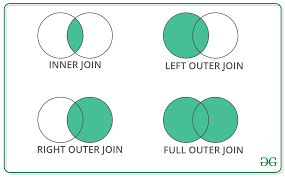
Source: Geeks for Geeks
Join Time Spent dataFrame with Grade book dataFrame
We are using the pd.merge() function from pandas to combine two datasets: time_spent and gradebook. These datasets are being merged on the common columns student_id and course_id with an outer join.
# Merge all datasets using outer join to ensure no loss of student data
joined_data = pd.merge(time_spent, gradebook, on=['student_id', 'course_id'], how='outer')Outer Join: An outer join returns all the rows from both DataFrames, regardless of whether there is a match between the DataFrames. Here’s how it handles different scenarios:
If there is a match between
student_idandcourse_idin both DataFrames, it combines the matching rows into a single row in the resulting DataFrame, containing columns from both original DataFrames.If a row in either
time_spentorgradebookhas astudent_idandcourse_idcombination that does not exist in the other DataFrame, the resulting DataFrame will still include this row. For the DataFrame where a match was not found, the columns will be filled withNaN(Not a Number), indicating missing data.The use of an outer join is particularly useful when you do not want to lose information from either DataFrame, even if there are no corresponding entries in the other DataFrame. This approach is beneficial when compiling a comprehensive record that includes all available data points, allowing for a more thorough analysis later, even if some data is missing.
Join Survey dataFrame with Joined dataFrame
👉 Your Turn ⤵
You need to:
- First, use
pd.mergefunction to mergejoined_datadataFrame withsurveydataFrame with the following variables:
- student_id
- course_id
- Second, save to a new object called
data_to_explore. - Third, Inspect the data by clicking the green arrow head.
#merge joined_data
#YOUR CODE HERE:
data_to_explore = pd.merge(joined_data, survey, on=['student_id', 'course_id'], how='outer')Parse columns
Parsing aims to split the course_id field into three distinct parts: subject, semester, and section. This is typically done to make the data easier to analyze by categorizing it into more descriptive attributes.
#parse the 'course_id' to extract 'subject', 'semester', and 'section'
data_to_explore[['subject', 'semester', 'section']] = data_to_explore['course_id'].str.extract(r'([A-Za-z]+)-(\w+)-(\d+)')
print(data_to_explore) student_id course_id gender enrollment_reason \
0 60186 AnPhA-S116-01 M Course Unavailable at Local School
1 66693 AnPhA-S116-01 M Course Unavailable at Local School
2 66811 AnPhA-S116-01 F Course Unavailable at Local School
3 66862 AnPhA-S116-01 F Course Unavailable at Local School
4 67508 AnPhA-S116-01 F Scheduling Conflict
.. ... ... ... ...
938 19 AnPhA-S217-02 NaN NaN
939 52 FrScA-S217-03 NaN NaN
940 57 FrScA-S217-01 NaN NaN
941 72 FrScA-S217-01 NaN NaN
942 80 FrScA-S217-01 NaN NaN
enrollment_status time_spent time_spent_hours total_points_possible \
0 Approved/Enrolled 2087.0501 34.784168 1775.0
1 Approved/Enrolled 2309.0334 38.483890 1775.0
2 Approved/Enrolled 5298.8507 88.314178 1775.0
3 Approved/Enrolled 1746.9667 29.116112 1775.0
4 Approved/Enrolled 2668.1830 44.469717 1775.0
.. ... ... ... ...
938 NaN NaN NaN NaN
939 NaN NaN NaN NaN
940 NaN NaN NaN NaN
941 NaN NaN NaN NaN
942 NaN NaN NaN NaN
total_points_earned proportion_earned ... q8 q9 q10 \
0 1674.73000 94.35 ... 4.0 4.0 4.0
1 1674.25000 94.32 ... 5.0 5.0 5.0
2 1633.15000 92.01 ... 4.0 4.0 4.0
3 1118.57333 63.02 ... NaN NaN NaN
4 1528.34333 86.10 ... NaN NaN NaN
.. ... ... ... ... ... ...
938 NaN NaN ... 5.0 5.0 5.0
939 NaN NaN ... 4.0 3.0 5.0
940 NaN NaN ... 5.0 2.0 4.0
941 NaN NaN ... 5.0 3.0 5.0
942 NaN NaN ... 4.0 2.0 3.0
date.x post_int post_uv post_tv post_percomp date.y \
0 2015-09-17T16:41:00Z NaN NaN NaN NaN NaN
1 2015-09-10T17:43:00Z NaN NaN NaN NaN NaN
2 2015-09-10T18:16:00Z NaN NaN NaN NaN NaN
3 NaN NaN NaN NaN NaN NaN
4 NaN NaN NaN NaN NaN NaN
.. ... ... ... ... ... ...
938 NaN NaN NaN NaN NaN NaN
939 NaN NaN NaN NaN NaN NaN
940 NaN NaN NaN NaN NaN NaN
941 NaN NaN NaN NaN NaN NaN
942 NaN NaN NaN NaN NaN NaN
date
0 NaN
1 NaN
2 NaN
3 NaN
4 NaN
.. ...
938 2017-02-09T16:42:00Z
939 2017-02-13T13:00:00Z
940 2017-01-27T16:48:00Z
941 2017-02-06T12:31:00Z
942 2017-01-23T16:49:00Z
[943 rows x 35 columns]Let’s inspect the dataFrame to see what it looks like. We will save it as an R object again so we can inspect the tibble easier.
👉 Your Turn ⤵
You need to:
- First, read python object into R using ’py$` syntax
- Second, Inspect the new r object with a function of your choosing.
- Third, press the green arrow head to run the code
❗️ Don’t forget that you need to change the code chunk to R.
# Read python object into R using 'py$` syntax
#YOUR CODE HERE:
data_to_explore_r = as_tibble(py$data_to_explore)
# Inspect new R object
#YOUR CODE HERE:
head(data_to_explore_r)
What was happening with the code and String Extraction:
.str.extract(r'([A-Za-z]+)-(\w+)-(\d+)'): This method is used to extract parts of the strings using a regular expression (regex).r'...': Therbefore the quotes indicates a raw string, which tells Python to interpret the backslashes in the string as literal characters, not as escape characters.([A-Za-z]+): This regex pattern captures a sequence of alphabetic characters. It represents thesubject(e.g., “AnPhA” for Anatomy and Physiology). The+ensures it captures one or more characters.(\w+): This captures a sequence of alphanumeric characters (including underscores), which in this context represents thesemester(e.g., “S116”). The\wstands for any word character, which includes letters, digits, and underscores.(\d+): This captures a sequence of digits and represents thesectionnumber (e.g., “01”). The\dstands for any digit, and+ensures one or more digits are captured.
full_data[['subject', 'semester', 'section']] = ...: This part of the code takes the extracted groups from the regex and assigns them to new columns in the dataFramefull_data. Each group in the regex corresponds to a column on the left-hand side in the order they appear.
Create a dictionary and replace names
# Create a dictionary to map abbreviations to full names
subject_map = {
"AnPhA": "Anatomy",
"BioA": "Biology",
"FrScA": "Forensics",
"OcnA": "Oceanography",
"PhysA": "Physics"
}
# Replace abbreviations with full subject names
data_to_explore['subject'] = data_to_explore['subject'].replace(subject_map)
# Display the updated DataFrame
print(data_to_explore) student_id course_id gender enrollment_reason \
0 60186 AnPhA-S116-01 M Course Unavailable at Local School
1 66693 AnPhA-S116-01 M Course Unavailable at Local School
2 66811 AnPhA-S116-01 F Course Unavailable at Local School
3 66862 AnPhA-S116-01 F Course Unavailable at Local School
4 67508 AnPhA-S116-01 F Scheduling Conflict
.. ... ... ... ...
938 19 AnPhA-S217-02 NaN NaN
939 52 FrScA-S217-03 NaN NaN
940 57 FrScA-S217-01 NaN NaN
941 72 FrScA-S217-01 NaN NaN
942 80 FrScA-S217-01 NaN NaN
enrollment_status time_spent time_spent_hours total_points_possible \
0 Approved/Enrolled 2087.0501 34.784168 1775.0
1 Approved/Enrolled 2309.0334 38.483890 1775.0
2 Approved/Enrolled 5298.8507 88.314178 1775.0
3 Approved/Enrolled 1746.9667 29.116112 1775.0
4 Approved/Enrolled 2668.1830 44.469717 1775.0
.. ... ... ... ...
938 NaN NaN NaN NaN
939 NaN NaN NaN NaN
940 NaN NaN NaN NaN
941 NaN NaN NaN NaN
942 NaN NaN NaN NaN
total_points_earned proportion_earned ... q8 q9 q10 \
0 1674.73000 94.35 ... 4.0 4.0 4.0
1 1674.25000 94.32 ... 5.0 5.0 5.0
2 1633.15000 92.01 ... 4.0 4.0 4.0
3 1118.57333 63.02 ... NaN NaN NaN
4 1528.34333 86.10 ... NaN NaN NaN
.. ... ... ... ... ... ...
938 NaN NaN ... 5.0 5.0 5.0
939 NaN NaN ... 4.0 3.0 5.0
940 NaN NaN ... 5.0 2.0 4.0
941 NaN NaN ... 5.0 3.0 5.0
942 NaN NaN ... 4.0 2.0 3.0
date.x post_int post_uv post_tv post_percomp date.y \
0 2015-09-17T16:41:00Z NaN NaN NaN NaN NaN
1 2015-09-10T17:43:00Z NaN NaN NaN NaN NaN
2 2015-09-10T18:16:00Z NaN NaN NaN NaN NaN
3 NaN NaN NaN NaN NaN NaN
4 NaN NaN NaN NaN NaN NaN
.. ... ... ... ... ... ...
938 NaN NaN NaN NaN NaN NaN
939 NaN NaN NaN NaN NaN NaN
940 NaN NaN NaN NaN NaN NaN
941 NaN NaN NaN NaN NaN NaN
942 NaN NaN NaN NaN NaN NaN
date
0 NaN
1 NaN
2 NaN
3 NaN
4 NaN
.. ...
938 2017-02-09T16:42:00Z
939 2017-02-13T13:00:00Z
940 2017-01-27T16:48:00Z
941 2017-02-06T12:31:00Z
942 2017-01-23T16:49:00Z
[943 rows x 35 columns]We can easily check out the dataFrame in R to see how the subject variable has been added.
# Read python object into R using 'py$` syntax
data_to_explore_r = as_tibble(py$data_to_explore)
# Inspect new R object
head(data_to_explore_r)Lastly lets look at our dataFrame’s columns to understand how many observations are in each column.
data_to_explore.info()<class 'pandas.core.frame.DataFrame'>
RangeIndex: 943 entries, 0 to 942
Data columns (total 35 columns):
# Column Non-Null Count Dtype
--- ------ -------------- -----
0 student_id 943 non-null object
1 course_id 943 non-null object
2 gender 716 non-null object
3 enrollment_reason 716 non-null object
4 enrollment_status 716 non-null object
5 time_spent 711 non-null float64
6 time_spent_hours 711 non-null float64
7 total_points_possible 717 non-null float64
8 total_points_earned 717 non-null float64
9 proportion_earned 717 non-null float64
10 pass_fail 717 non-null object
11 subject 943 non-null object
12 semester 943 non-null object
13 section 943 non-null object
14 int 650 non-null float64
15 val 656 non-null float64
16 percomp 655 non-null float64
17 tv 651 non-null float64
18 q1 658 non-null float64
19 q2 658 non-null float64
20 q3 657 non-null float64
21 q4 654 non-null float64
22 q5 657 non-null float64
23 q6 658 non-null float64
24 q7 657 non-null float64
25 q8 657 non-null float64
26 q9 657 non-null float64
27 q10 658 non-null float64
28 date.x 550 non-null object
29 post_int 95 non-null float64
30 post_uv 95 non-null float64
31 post_tv 95 non-null float64
32 post_percomp 95 non-null float64
33 date.y 95 non-null object
34 date 109 non-null object
dtypes: float64(23), object(12)
memory usage: 258.0+ KBWrite the dataFrame to the folder
Now let’s write the file to our data folder using the .to_csv() to save for later or download.
# add the function to write data to file to use later
data_to_explore.to_csv("data/data_to_explore.csv", index=False)Check the data folder to confirm the location of your new file.
🛑 Stop here. Congratulations you finished the first part of the case study.
3. EXPLORE (Module 2)
Alex follows the steps to load and wrangle data, reflecting on how each step can provide insights into her students’ engagement levels. She is particularly interested in understanding patterns in the time students spend on different course materials and how these patterns correlate with their performance.
Exploratory data analysis (EDA) focuses is an approach/philosophy summarizing the main characteristics of data sets, often using visualization methods. The goal is not formal modeling or hypothesis testing, but understanding and exploring data to formulate hypotheses for further investigation.
EDA is a fundamental early step after data collection and pre-processing, where the data is simply visualized, plotted, manipulated, without any assumptions, in order to help assessing the quality of the data and building models.
We’ve already wrangled out data - but let’s look at the data frame to make sure it is still correct. Additionally we can do some quick filtering and sorting to explore ideas.
# Inspect the R object
head(data_to_explore_r)#summary Statistics
pandas has some great options for built-in EDA; in fact we’ve already seen one of them, data_to_explore.info() which, as well as reporting datatypes and memory usage, also tells us how many observations in each column are ‘truthy’ rather than ‘falsy’, ie how many have non-null values.
But, you can use the describe() function to give you some quick summary statistics.
df_desc = data_to_explore.describe()
print(df_desc.head()) time_spent time_spent_hours total_points_possible \
count 711.000000 711.000000 717.000000
mean 1828.803435 30.480057 1619.546722
std 1363.134166 22.718903 387.123588
min 0.450000 0.007500 1212.000000
25% 895.566600 14.926110 1217.000000
total_points_earned proportion_earned int val \
count 717.000000 717.000000 650.000000 656.000000
mean 1229.981469 76.228229 4.301000 3.754319
std 510.642484 25.201053 0.599141 0.748296
min 0.000000 0.000000 1.800000 1.000000
25% 1002.500000 72.360000 4.000000 3.333333
percomp tv q1 ... q5 q6 \
count 655.000000 651.000000 658.000000 ... 657.000000 658.000000
mean 3.635878 4.065394 4.337386 ... 4.281583 4.048632
std 0.686710 0.585938 0.663348 ... 0.688436 0.801866
min 1.500000 1.000000 1.000000 ... 1.000000 1.000000
25% 3.000000 3.714286 4.000000 ... 4.000000 4.000000
q7 q8 q9 q10 post_int post_uv \
count 657.000000 657.00000 657.000000 658.000000 95.000000 95.000000
mean 3.960426 4.34551 3.552511 4.173252 3.878947 3.480702
std 0.854482 0.65165 0.920994 0.870845 0.938156 0.987769
min 1.000000 1.00000 1.000000 1.000000 1.000000 1.000000
25% 3.000000 4.00000 3.000000 4.000000 3.500000 3.000000
post_tv post_percomp
count 95.000000 95.000000
mean 3.708271 3.468421
std 0.901081 0.880675
min 1.000000 1.000000
25% 3.285714 3.000000
[5 rows x 23 columns]You can see that there are a lot of numbers so we want to chain round(1) to describe.
What will this do?
#YOUR CODE HERE:
sum_table = data_to_explore.describe().round(1)
sum_table| time_spent | time_spent_hours | total_points_possible | total_points_earned | proportion_earned | int | val | percomp | tv | q1 | ... | q5 | q6 | q7 | q8 | q9 | q10 | post_int | post_uv | post_tv | post_percomp | |
|---|---|---|---|---|---|---|---|---|---|---|---|---|---|---|---|---|---|---|---|---|---|
| count | 711.0 | 711.0 | 717.0 | 717.0 | 717.0 | 650.0 | 656.0 | 655.0 | 651.0 | 658.0 | ... | 657.0 | 658.0 | 657.0 | 657.0 | 657.0 | 658.0 | 95.0 | 95.0 | 95.0 | 95.0 |
| mean | 1828.8 | 30.5 | 1619.5 | 1230.0 | 76.2 | 4.3 | 3.8 | 3.6 | 4.1 | 4.3 | ... | 4.3 | 4.0 | 4.0 | 4.3 | 3.6 | 4.2 | 3.9 | 3.5 | 3.7 | 3.5 |
| std | 1363.1 | 22.7 | 387.1 | 510.6 | 25.2 | 0.6 | 0.7 | 0.7 | 0.6 | 0.7 | ... | 0.7 | 0.8 | 0.9 | 0.7 | 0.9 | 0.9 | 0.9 | 1.0 | 0.9 | 0.9 |
| min | 0.4 | 0.0 | 1212.0 | 0.0 | 0.0 | 1.8 | 1.0 | 1.5 | 1.0 | 1.0 | ... | 1.0 | 1.0 | 1.0 | 1.0 | 1.0 | 1.0 | 1.0 | 1.0 | 1.0 | 1.0 |
| 25% | 895.6 | 14.9 | 1217.0 | 1002.5 | 72.4 | 4.0 | 3.3 | 3.0 | 3.7 | 4.0 | ... | 4.0 | 4.0 | 3.0 | 4.0 | 3.0 | 4.0 | 3.5 | 3.0 | 3.3 | 3.0 |
| 50% | 1560.0 | 26.0 | 1676.0 | 1177.1 | 85.6 | 4.4 | 3.7 | 3.5 | 4.1 | 4.0 | ... | 4.0 | 4.0 | 4.0 | 4.0 | 4.0 | 4.0 | 4.0 | 3.7 | 3.9 | 3.5 |
| 75% | 2423.9 | 40.4 | 1791.0 | 1572.4 | 92.3 | 4.8 | 4.3 | 4.0 | 4.5 | 5.0 | ... | 5.0 | 5.0 | 5.0 | 5.0 | 4.0 | 5.0 | 4.5 | 4.0 | 4.3 | 4.0 |
| max | 8870.9 | 147.8 | 2425.0 | 2413.5 | 100.7 | 5.0 | 5.0 | 5.0 | 5.0 | 5.0 | ... | 5.0 | 5.0 | 5.0 | 5.0 | 5.0 | 5.0 | 5.0 | 5.0 | 5.0 | 5.0 |
8 rows × 23 columns
The describe table can get long so we can transpose it using the T property (or the transpose() method).
sum_table = sum_table.T
sum_table| count | mean | std | min | 25% | 50% | 75% | max | |
|---|---|---|---|---|---|---|---|---|
| time_spent | 711.0 | 1828.8 | 1363.1 | 0.4 | 895.6 | 1560.0 | 2423.9 | 8870.9 |
| time_spent_hours | 711.0 | 30.5 | 22.7 | 0.0 | 14.9 | 26.0 | 40.4 | 147.8 |
| total_points_possible | 717.0 | 1619.5 | 387.1 | 1212.0 | 1217.0 | 1676.0 | 1791.0 | 2425.0 |
| total_points_earned | 717.0 | 1230.0 | 510.6 | 0.0 | 1002.5 | 1177.1 | 1572.4 | 2413.5 |
| proportion_earned | 717.0 | 76.2 | 25.2 | 0.0 | 72.4 | 85.6 | 92.3 | 100.7 |
| int | 650.0 | 4.3 | 0.6 | 1.8 | 4.0 | 4.4 | 4.8 | 5.0 |
| val | 656.0 | 3.8 | 0.7 | 1.0 | 3.3 | 3.7 | 4.3 | 5.0 |
| percomp | 655.0 | 3.6 | 0.7 | 1.5 | 3.0 | 3.5 | 4.0 | 5.0 |
| tv | 651.0 | 4.1 | 0.6 | 1.0 | 3.7 | 4.1 | 4.5 | 5.0 |
| q1 | 658.0 | 4.3 | 0.7 | 1.0 | 4.0 | 4.0 | 5.0 | 5.0 |
| q2 | 658.0 | 3.7 | 0.9 | 1.0 | 3.0 | 4.0 | 4.0 | 5.0 |
| q3 | 657.0 | 3.3 | 0.9 | 1.0 | 3.0 | 3.0 | 4.0 | 5.0 |
| q4 | 654.0 | 4.3 | 0.8 | 1.0 | 4.0 | 5.0 | 5.0 | 5.0 |
| q5 | 657.0 | 4.3 | 0.7 | 1.0 | 4.0 | 4.0 | 5.0 | 5.0 |
| q6 | 658.0 | 4.0 | 0.8 | 1.0 | 4.0 | 4.0 | 5.0 | 5.0 |
| q7 | 657.0 | 4.0 | 0.9 | 1.0 | 3.0 | 4.0 | 5.0 | 5.0 |
| q8 | 657.0 | 4.3 | 0.7 | 1.0 | 4.0 | 4.0 | 5.0 | 5.0 |
| q9 | 657.0 | 3.6 | 0.9 | 1.0 | 3.0 | 4.0 | 4.0 | 5.0 |
| q10 | 658.0 | 4.2 | 0.9 | 1.0 | 4.0 | 4.0 | 5.0 | 5.0 |
| post_int | 95.0 | 3.9 | 0.9 | 1.0 | 3.5 | 4.0 | 4.5 | 5.0 |
| post_uv | 95.0 | 3.5 | 1.0 | 1.0 | 3.0 | 3.7 | 4.0 | 5.0 |
| post_tv | 95.0 | 3.7 | 0.9 | 1.0 | 3.3 | 3.9 | 4.3 | 5.0 |
| post_percomp | 95.0 | 3.5 | 0.9 | 1.0 | 3.0 | 3.5 | 4.0 | 5.0 |
You can see it better using the to_string() function. This is more suitable to publication statistics.
print(sum_table.to_string()) count mean std min 25% 50% 75% max
time_spent 711.0 1828.8 1363.1 0.4 895.6 1560.0 2423.9 8870.9
time_spent_hours 711.0 30.5 22.7 0.0 14.9 26.0 40.4 147.8
total_points_possible 717.0 1619.5 387.1 1212.0 1217.0 1676.0 1791.0 2425.0
total_points_earned 717.0 1230.0 510.6 0.0 1002.5 1177.1 1572.4 2413.5
proportion_earned 717.0 76.2 25.2 0.0 72.4 85.6 92.3 100.7
int 650.0 4.3 0.6 1.8 4.0 4.4 4.8 5.0
val 656.0 3.8 0.7 1.0 3.3 3.7 4.3 5.0
percomp 655.0 3.6 0.7 1.5 3.0 3.5 4.0 5.0
tv 651.0 4.1 0.6 1.0 3.7 4.1 4.5 5.0
q1 658.0 4.3 0.7 1.0 4.0 4.0 5.0 5.0
q2 658.0 3.7 0.9 1.0 3.0 4.0 4.0 5.0
q3 657.0 3.3 0.9 1.0 3.0 3.0 4.0 5.0
q4 654.0 4.3 0.8 1.0 4.0 5.0 5.0 5.0
q5 657.0 4.3 0.7 1.0 4.0 4.0 5.0 5.0
q6 658.0 4.0 0.8 1.0 4.0 4.0 5.0 5.0
q7 657.0 4.0 0.9 1.0 3.0 4.0 5.0 5.0
q8 657.0 4.3 0.7 1.0 4.0 4.0 5.0 5.0
q9 657.0 3.6 0.9 1.0 3.0 4.0 4.0 5.0
q10 658.0 4.2 0.9 1.0 4.0 4.0 5.0 5.0
post_int 95.0 3.9 0.9 1.0 3.5 4.0 4.5 5.0
post_uv 95.0 3.5 1.0 1.0 3.0 3.7 4.0 5.0
post_tv 95.0 3.7 0.9 1.0 3.3 3.9 4.3 5.0
post_percomp 95.0 3.5 0.9 1.0 3.0 3.5 4.0 5.0Filtering and sorting data
Use filter() function from {dplyr} package
We can explore students at risk of failing the course using the filter function looking at students below 70:
# Filter students with proportion_earned less than 70
at_risk_students = data_to_explore[data_to_explore['proportion_earned'] < 70]
# Print the DataFrame with at-risk students
print(at_risk_students) student_id course_id gender enrollment_reason \
3 66862 AnPhA-S116-01 F Course Unavailable at Local School
10 85865 AnPhA-S116-01 F Learning Preference of the Student
15 86267 AnPhA-S116-01 F Course Unavailable at Local School
28 86492 AnPhA-S116-01 F Course Unavailable at Local School
30 86588 AnPhA-S116-01 F Scheduling Conflict
.. ... ... ... ...
804 260653 AnPhA-S217-01 NaN NaN
815 262405 BioA-S217-01 NaN NaN
816 262625 OcnA-S217-02 NaN NaN
817 262644 AnPhA-S217-01 NaN NaN
828 265311 AnPhA-S217-02 NaN NaN
enrollment_status time_spent time_spent_hours total_points_possible \
3 Approved/Enrolled 1746.9667 29.116112 1775.0
10 Approved/Enrolled 95.3000 1.588333 1775.0
15 Approved/Enrolled 406.0001 6.766668 1775.0
28 Approved/Enrolled 893.1332 14.885553 1775.0
30 Approved/Enrolled 67.5167 1.125278 1775.0
.. ... ... ... ...
804 NaN NaN NaN 1805.0
815 NaN NaN NaN 2425.0
816 NaN NaN NaN 1791.0
817 NaN NaN NaN 1805.0
828 NaN NaN NaN 1775.0
total_points_earned proportion_earned ... q8 q9 q10 \
3 1118.57333 63.02 ... NaN NaN NaN
10 959.91333 54.08 ... NaN NaN NaN
15 776.77000 43.76 ... 5.0 5.0 5.0
28 708.27500 39.90 ... 4.0 4.0 4.0
30 534.00000 30.08 ... 5.0 4.0 5.0
.. ... ... ... ... ... ...
804 297.50000 16.48 ... NaN NaN NaN
815 1584.54000 65.34 ... NaN NaN NaN
816 1188.10000 66.34 ... NaN NaN NaN
817 1240.91666 68.75 ... NaN NaN NaN
828 1131.16666 63.73 ... NaN NaN NaN
date.x post_int post_uv post_tv post_percomp date.y \
3 NaN NaN NaN NaN NaN NaN
10 NaN NaN NaN NaN NaN NaN
15 2015-09-14T01:18:00Z NaN NaN NaN NaN NaN
28 2015-09-17T15:38:00Z NaN NaN NaN NaN NaN
30 2015-09-14T11:53:00Z NaN NaN NaN NaN NaN
.. ... ... ... ... ... ...
804 NaN NaN NaN NaN NaN NaN
815 NaN NaN NaN NaN NaN NaN
816 NaN NaN NaN NaN NaN NaN
817 NaN NaN NaN NaN NaN NaN
828 NaN NaN NaN NaN NaN NaN
date
3 NaN
10 NaN
15 NaN
28 NaN
30 NaN
.. ...
804 NaN
815 NaN
816 NaN
817 NaN
828 NaN
[155 rows x 35 columns]We can also look at the count
# Count the number of at-risk students
at_risk_count = len(at_risk_students)
print("Number of at-risk students:", at_risk_count)Number of at-risk students: 155Use .sort_values() function
#sort in ascending order
sorted_data = data_to_explore.sort_values(by='proportion_earned')
# Display the sorted DataFrame
print(sorted_data) student_id course_id gender enrollment_reason \
256 53475 FrScA-S116-02 F Course Unavailable at Local School
205 85659 FrScA-S116-01 M Course Unavailable at Local School
345 89465 FrScA-S216-01 M Course Unavailable at Local School
166 90995 BioA-S116-01 F Learning Preference of the Student
177 88568 BioA-S216-01 M Other
.. ... ... ... ...
938 19 AnPhA-S217-02 NaN NaN
939 52 FrScA-S217-03 NaN NaN
940 57 FrScA-S217-01 NaN NaN
941 72 FrScA-S217-01 NaN NaN
942 80 FrScA-S217-01 NaN NaN
enrollment_status time_spent time_spent_hours total_points_possible \
256 Dropped NaN NaN 1212.0
205 Dropped NaN NaN 1212.0
345 Dropped 24.6500 0.410833 1232.0
166 Approved/Enrolled 13.9333 0.232222 2420.0
177 Dropped NaN NaN 2425.0
.. ... ... ... ...
938 NaN NaN NaN NaN
939 NaN NaN NaN NaN
940 NaN NaN NaN NaN
941 NaN NaN NaN NaN
942 NaN NaN NaN NaN
total_points_earned proportion_earned ... q8 q9 q10 \
256 0.0 0.0 ... NaN NaN NaN
205 0.0 0.0 ... NaN NaN NaN
345 0.0 0.0 ... 3.0 3.0 3.0
166 0.0 0.0 ... NaN NaN NaN
177 0.0 0.0 ... NaN NaN NaN
.. ... ... ... ... ... ...
938 NaN NaN ... 5.0 5.0 5.0
939 NaN NaN ... 4.0 3.0 5.0
940 NaN NaN ... 5.0 2.0 4.0
941 NaN NaN ... 5.0 3.0 5.0
942 NaN NaN ... 4.0 2.0 3.0
date.x post_int post_uv post_tv post_percomp date.y \
256 NaN NaN NaN NaN NaN NaN
205 NaN NaN NaN NaN NaN NaN
345 2016-02-02T17:43:00Z NaN NaN NaN NaN NaN
166 NaN NaN NaN NaN NaN NaN
177 NaN NaN NaN NaN NaN NaN
.. ... ... ... ... ... ...
938 NaN NaN NaN NaN NaN NaN
939 NaN NaN NaN NaN NaN NaN
940 NaN NaN NaN NaN NaN NaN
941 NaN NaN NaN NaN NaN NaN
942 NaN NaN NaN NaN NaN NaN
date
256 NaN
205 NaN
345 NaN
166 NaN
177 NaN
.. ...
938 2017-02-09T16:42:00Z
939 2017-02-13T13:00:00Z
940 2017-01-27T16:48:00Z
941 2017-02-06T12:31:00Z
942 2017-01-23T16:49:00Z
[943 rows x 35 columns]sort_values()Method: This method is used to sort a DataFrame by one or more columns.by='proportion_earned': Specifies the column name by which the DataFrame should be sorted. In this case, it’s sorting by theproportion_earnedcolumn.Implicit
ascending=True: By default,sort_values()sorts the data in ascending order. If you need to sort in descending order, you can passascending=Falseas an argument.
#sort in descending order
sorted_data = data_to_explore.sort_values(by='proportion_earned', ascending=False)
# Display the sorted DataFrame
print(sorted_data) student_id course_id gender enrollment_reason \
203 85650 FrScA-S116-01 M Course Unavailable at Local School
168 91067 BioA-S116-01 F Other
586 78153 PhysA-S216-01 F Learning Preference of the Student
245 88261 FrScA-S116-01 F Course Unavailable at Local School
432 66740 OcnA-S116-01 F Course Unavailable at Local School
.. ... ... ... ...
938 19 AnPhA-S217-02 NaN NaN
939 52 FrScA-S217-03 NaN NaN
940 57 FrScA-S217-01 NaN NaN
941 72 FrScA-S217-01 NaN NaN
942 80 FrScA-S217-01 NaN NaN
enrollment_status time_spent time_spent_hours total_points_possible \
203 Approved/Enrolled 2689.1334 44.818890 1212.0
168 Approved/Enrolled 2920.9838 48.683063 2420.0
586 Approved/Enrolled 1769.8667 29.497778 2225.0
245 Approved/Enrolled 1269.6667 21.161112 1212.0
432 Approved/Enrolled 965.2994 16.088323 1676.0
.. ... ... ... ...
938 NaN NaN NaN NaN
939 NaN NaN NaN NaN
940 NaN NaN NaN NaN
941 NaN NaN NaN NaN
942 NaN NaN NaN NaN
total_points_earned proportion_earned ... q8 q9 q10 \
203 1221.0 100.74 ... 4.0 3.0 4.0
168 2413.5 99.73 ... 4.0 3.0 4.0
586 2216.0 99.60 ... 4.0 4.0 4.0
245 1205.0 99.42 ... 4.0 2.0 3.0
432 1663.0 99.22 ... 4.0 3.0 4.0
.. ... ... ... ... ... ...
938 NaN NaN ... 5.0 5.0 5.0
939 NaN NaN ... 4.0 3.0 5.0
940 NaN NaN ... 5.0 2.0 4.0
941 NaN NaN ... 5.0 3.0 5.0
942 NaN NaN ... 4.0 2.0 3.0
date.x post_int post_uv post_tv post_percomp \
203 2015-09-11T13:36:00Z NaN NaN NaN NaN
168 2015-09-20T22:47:00Z NaN NaN NaN NaN
586 2016-01-27T00:26:00Z NaN NaN NaN NaN
245 2015-09-09T18:28:00Z 4.0 4.333333 4.142857 3.0
432 2015-09-09T14:08:00Z 4.0 3.666667 3.857143 3.5
.. ... ... ... ... ...
938 NaN NaN NaN NaN NaN
939 NaN NaN NaN NaN NaN
940 NaN NaN NaN NaN NaN
941 NaN NaN NaN NaN NaN
942 NaN NaN NaN NaN NaN
date.y date
203 NaN NaN
168 NaN NaN
586 NaN NaN
245 2015-12-27T01:03:00Z NaN
432 2015-09-12T22:46:00Z NaN
.. ... ...
938 NaN 2017-02-09T16:42:00Z
939 NaN 2017-02-13T13:00:00Z
940 NaN 2017-01-27T16:48:00Z
941 NaN 2017-02-06T12:31:00Z
942 NaN 2017-01-23T16:49:00Z
[943 rows x 35 columns]👉 Your Turn ⤵
Think what other factors are important to identify students at risk. Run your code and analyze the results:
#YOUR CODE HERE:We can also use the SweetViz package from pandas-profiling. To do this we need to do some of the basic set up again.
Make sure to install the packages in the terminal.
Note
everything after the $ in the Terminal (MAC/LINUX)
$ python3 -m pip install pandas-profiling
Note
everything after the $ in the Terminal (Windows)
$ py -m pip install pandas-profiling
This output from SweetViz is best for internal use.
This is because the output is rich, but not well-suited to exporting to a table that you add, for instance, to a Google Docs or Microsoft Word manuscript.
Of course, these values can be entered manually into a table, but we’ll also discuss ways later on to create tables that are ready, or nearly-ready-to be added directly to manuscripts.
First, install and load the package. Normally you would do this above but we want to make sure you know which packages are used with the new functions.
import sweetviz as sv
# Create and display the report
report = sv.analyze(data_to_explore)
report.show_html('Sweetviz_Report.html') # This opens the report in your default web browserMissing Values and imputation
We know from looking at the ‘info()’ function earlier there are a lot of missing values. Python is very sensitive to missing values, before going any further we need to address these.
We will check for missing values step by step
👉 Your Turn ⤵
- First, use the
isnull()method to identify all the cells in your DataFrame that contain missing values and save as a new object callednull_data.
#find cells with missing values
#YOUR CODE HERE
null_data = data_to_explore.isnull()- Second, apply the
sum()method to thenull_datawith chaining. This will calculate the total number of missing values in each column because in Python, True is equivalent to 1 and False is 0. Save as a new object calledmissing_count.
#calculate the number of missing values
#YOUR CODE HERE
missing_count = null_data.sum()
print(missing_count)student_id 0
course_id 0
gender 227
enrollment_reason 227
enrollment_status 227
time_spent 232
time_spent_hours 232
total_points_possible 226
total_points_earned 226
proportion_earned 226
pass_fail 226
subject 0
semester 0
section 0
int 293
val 287
percomp 288
tv 292
q1 285
q2 285
q3 286
q4 289
q5 286
q6 285
q7 286
q8 286
q9 286
q10 285
date.x 393
post_int 848
post_uv 848
post_tv 848
post_percomp 848
date.y 848
date 834
dtype: int64- Use the
len()function to find out the total number of rows in your DataFrame to determine the denominator for calculating the percentage of missing data. Save as a new object calledtotal_entries.
#find the number of rows in the df
#YOUR CODE HERE
total_entries = len(data_to_explore)- Divide the total missing values per column (from Step 2) by the total number of entries (from Step 3) and multiply by 100 to convert this ratio into a percentage.
#calculate the missing counts
missing_percentage = (missing_count / total_entries) * 100- Finally, print or display the missing_percentage to review the percentage of missing data in each column.
#show output
print(missing_percentage)student_id 0.000000
course_id 0.000000
gender 24.072110
enrollment_reason 24.072110
enrollment_status 24.072110
time_spent 24.602333
time_spent_hours 24.602333
total_points_possible 23.966066
total_points_earned 23.966066
proportion_earned 23.966066
pass_fail 23.966066
subject 0.000000
semester 0.000000
section 0.000000
int 31.071050
val 30.434783
percomp 30.540827
tv 30.965005
q1 30.222694
q2 30.222694
q3 30.328738
q4 30.646872
q5 30.328738
q6 30.222694
q7 30.328738
q8 30.328738
q9 30.328738
q10 30.222694
date.x 41.675504
post_int 89.925769
post_uv 89.925769
post_tv 89.925769
post_percomp 89.925769
date.y 89.925769
date 88.441145
dtype: float64You could also write the code with chaining and we added that we do not want columns that are 0. See below
# Calculate the percentage of missing data in each column
missing_percentage = (data_to_explore.isnull().sum() / len(data_to_explore)) * 100
print("Percentage of missing data in each column:")
print(missing_percentage[missing_percentage > 0]) # Only display columns with missing percentagesPercentage of missing data in each column:
gender 24.072110
enrollment_reason 24.072110
enrollment_status 24.072110
time_spent 24.602333
time_spent_hours 24.602333
total_points_possible 23.966066
total_points_earned 23.966066
proportion_earned 23.966066
pass_fail 23.966066
int 31.071050
val 30.434783
percomp 30.540827
tv 30.965005
q1 30.222694
q2 30.222694
q3 30.328738
q4 30.646872
q5 30.328738
q6 30.222694
q7 30.328738
q8 30.328738
q9 30.328738
q10 30.222694
date.x 41.675504
post_int 89.925769
post_uv 89.925769
post_tv 89.925769
post_percomp 89.925769
date.y 89.925769
date 88.441145
dtype: float64We should look for any outliers to decide how we want to treat the missing data.
# Suppose 'data_to_explore' is your DataFrame and 'proportion_earned' is the column of interest
plt.figure(figsize=(10, 6))
data_to_explore['proportion_earned'].plot(kind='box')
plt.title('Boxplot of Proportion Earned')
plt.ylabel('Proportion Earned')
plt.grid(True)
plt.show()
plt.clf() #add to clear the plot
<Figure size 672x480 with 0 Axes>Data Visualization
Use Matplotlib and Seaborn libraries
Matplotlib and Seaborn are powerful Python libraries for creating static, interactive, and animated visualizations. Matplotlib provides a wide range of simple plotting functions, while Seaborn, which is built on top of Matplotlib, offers a high-level interface for drawing attractive statistical graphics.
For more detailed resources on these libraries, you can refer to the Matplotlib documentation and the Seaborn documentation. Additionally, online galleries like Python Graph Gallery offer code examples and inspiration.
“Elegant Graphics for Data Analysis” states that “every Matplotlib/Seaborn plot can include:
- Data,
- Aesthetic mappings between variables in the data and visual properties,
- At least one plot type that defines how to render each observation.”
One Continuous Variable
Let’s explore the following research question with a bar plot:
❓ Which online course had the largest enrollment numbers?
👉 Your Turn ⤵
You need to: 1. First, inspect the data_to_explore to understand what variables might be relevant to explore the research question. Use the data_to_explore_r or inspect it another way.
# Inspect the data frame
#YOUR CODE HERE:
data_to_explore_rInstall visualization libraries
import seaborn as snsLevel a. Basic Bar Plot
As a reminder, the most basic visualization that you can make with Seaborn includes:
Data:
data_to_exploreAesthetic mapping - one categorical variable:
subjectmapped to the x-axis
Plot type:
sns.countplotClear the plot: use
plt.clf()at the end of the code to clear the plot
# Create a bar plot
sns.countplot(data=data_to_explore, x='subject')
plt.show()
plt.clf() #add to clear the plot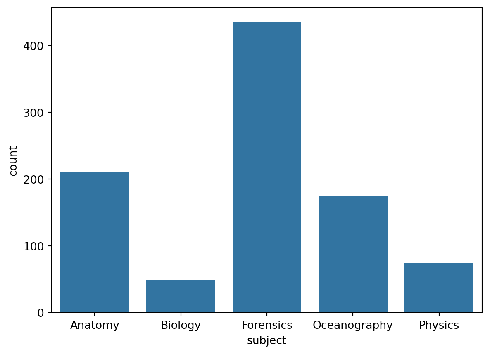
<Figure size 672x480 with 0 Axes>The sns.countplot(), automatically counts the number of occurrences of each category. To use sns.barplot(), you typically need to provide both categorical (x) and numerical (y) data. This requires you to prepare the data by calculating the counts for each category, essentially aggregating the data.
# Compute the counts for each subject
subject_counts = data_to_explore['subject'].value_counts().reset_index()
subject_counts.columns = ['subject', 'count']
# Create the bar plot using sns.barplot()
plt.figure(figsize=(10, 6))
sns.barplot(data=subject_counts, x='subject', y='count')
plt.show()
plt.clf() #add to clear the plot
<Figure size 672x480 with 0 Axes>👉 Your Turn ⤵
So, now you can answer the question: ❓ Which online course had the largest enrollment numbers?
- Your answer here
Level b. Add Labels
Adding labels to your plot helps provide context and clarity to the data being visualized. The plt.title() function is used to add a title to the plot, while plt.xlabel() and plt.ylabel() add labels to the x-axis and y-axis, respectively, ensuring that viewers understand what each axis represents. Additionally, plt.figtext() is used to add a caption below the plot, which can provide further explanation or insight into the data presented.
#YOUR CODE HERE:
# Create a bar plot with labels
sns.countplot(data=data_to_explore, x='subject')
plt.title("Number of Student Enrollments per Subject") # Adding a title
plt.xlabel("Subject") # Label for the x-axis
plt.ylabel("Count") # Label for the y-axis
plt.figtext(0.5, -0.1, "Which online courses have had the largest enrollment numbers?", ha="center", fontsize=10) # Adding a caption below the plot
plt.show()
plt.clf() #add to clear the plot
<Figure size 672x480 with 0 Axes># Ensure your data has the 'gender' NaNs replaced if you haven't done so
data_to_explore['gender'] = data_to_explore['gender'].fillna('Not Provided')
# Create a stacked bar plot
sns.histplot(data=data_to_explore, x='subject', hue='gender', multiple='stack', shrink=0.8)
plt.title("Stacked Gender Distribution Across Subjects") # Adding a title
plt.xlabel("Subject") # Label for the x-axis
plt.ylabel("Count") # Label for the y-axis
plt.figtext(0.5, -0.1, "How gender distribution varies by subject", ha="center", fontsize=10) # Adding a caption below the plot
plt.show()
plt.clf() #add to clear the plot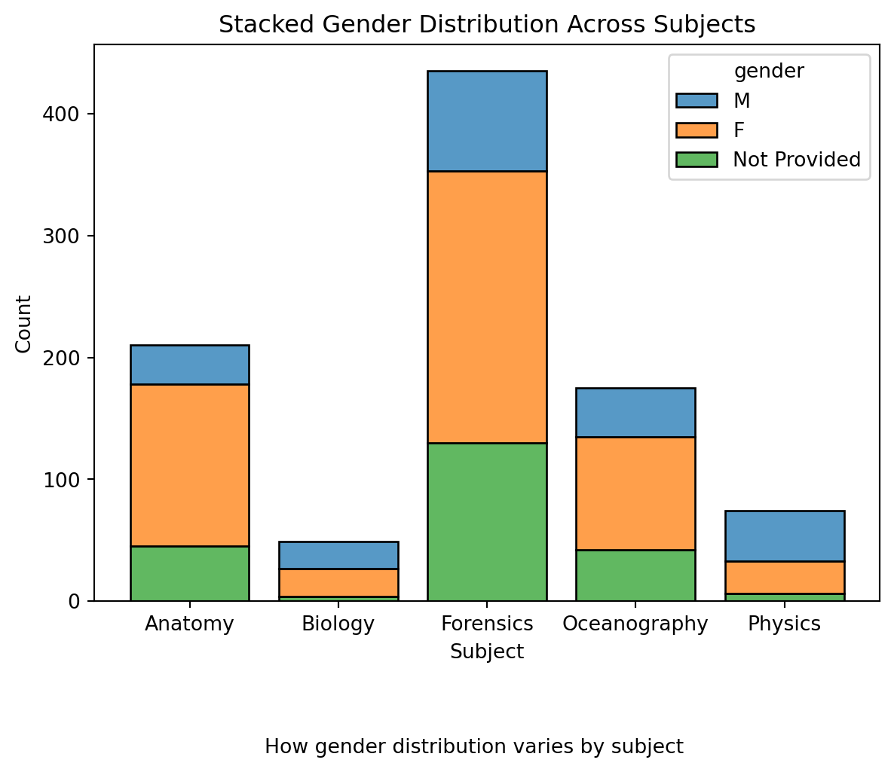
<Figure size 672x480 with 0 Axes>Histogram
We will be guided by the following research question.
❓ How many hours do students watch TV?
data: data_to_explore
aes()function - one continuous variable:tvvariable mapped to x position
Plot type: sns.histplot()
Add a title “Number of Hours Students Watch TV per Day”
Add a caption that poses the question “Approximately how many students watch 4+ hours of TV per day?”
NEED HELP? TRY Seaborn Documentation
👉 Your Turn ⤵
# Create a histogram for TV watching hours
#YOUR CODE HERE:
plt.figure(figsize=(10, 6))
sns.histplot(data=data_to_explore, x='tv', bins=5)
plt.title("Number of Hours Students Watch TV per Day") # Add the title
plt.xlabel("TV Watching Hours") # Label for the x-axis
plt.ylabel("Count") # Label for the y-axis
plt.figtext(0.5, -0.1, "Approximately how many students watch 4+ hours of TV per day?", ha="center", fontsize=10) # Add the caption
plt.show()
plt.clf() #add to clear the plot
<Figure size 672x480 with 0 Axes>Checking Skewness of data
We actually do not have any missing values for TV but if we did we would check for Skewness to see how to handle the missing data, Median, Mean or remove.
# Checking skewness with Pandas
skewness = data_to_explore['tv'].skew()
print(f'Skewness of tv data: {skewness}')Skewness of tv data: -0.6182703781631922Interpretation of Skewness Values
Skewness = 0: The data is perfectly symmetrical.
Skewness > 0: The data is positively skewed (right-tailed).
Skewness < 0: The data is negatively skewed (left-tailed).
👉 Your Turn ⤵
What does the skewness of -0.62 imply? How should we handle missing values?
- “Your answers here” (A skewness value of −0.6182703781631922-0.6182703781631922−0.6182703781631922 for the
tvdata means that the data distribution is negatively skewed, also known as left-skewed. Meaning we should use the median for imputation.
We would rerun the graph with the new data filling in the missing values with Median. See below.
# Calculate the median of the 'tv' variable
median_tv = data_to_explore['tv'].median()
# Impute missing values with the median
data_to_explore['tv'].fillna(median_tv, inplace=True)
# Plot the histogram after imputation
plt.figure(figsize=(10, 6))
sns.histplot(data=data_to_explore, x='tv', bins=5)
plt.title("Number of Hours Students Watch TV per Day") # Add the title
plt.xlabel("TV Watching Hours") # Label for the x-axis
plt.ylabel("Count") # Label for the y-axis
plt.figtext(0.5, -0.1, "Approximately how many students watch 4+ hours of TV per day?", ha="center", fontsize=10) # Add the caption
plt.show()
plt.clf() #add to clear the plot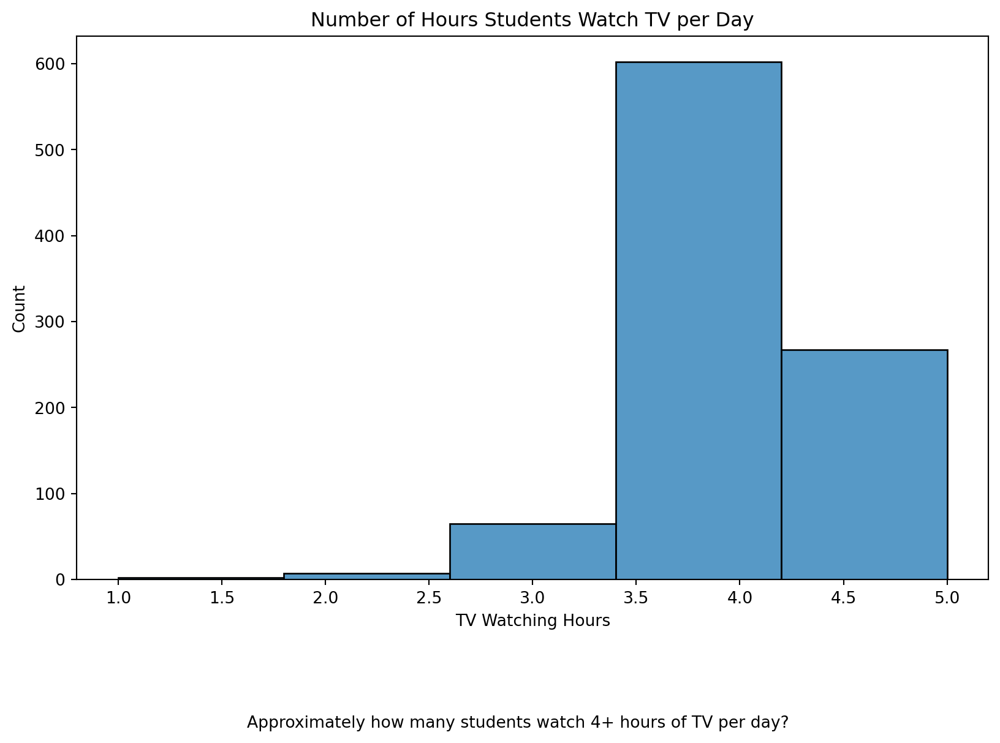
<Figure size 672x480 with 0 Axes>Two Categorical Variables
Create a basic visualization that examines the relationship between two categorical variables.
We will be guided by the following research question.
❓ What are the reasons for enrollment in various courses?
Heatmap
data: data_to_explore
Use
groupby()andsize()to countsubjectandenrollment_reasonPlot type: sns.heatmap()
Add a title “Reasons for Enrollment by Subject”
Add a caption: “Which subjects were the least available at local schools?”
# Create a pivot table for the heatmap
pivot_data = data_to_explore.pivot_table(index='enrollment_reason', columns='subject', aggfunc='size', fill_value=0)
# Create the heatmap
plt.figure(figsize=(12, 8))
sns.heatmap(pivot_data, cmap="YlOrRd", annot=True)
plt.title("Reasons for Enrollment by Subject") # Add the title
plt.xlabel("Subject") # Label for the x-axis
plt.ylabel("Enrollment Reason") # Label for the y-axis
plt.figtext(0.5, -0.1, "Which subjects were the least available at local schools?", ha="center", fontsize=10) # Add the caption
plt.show()
plt.clf() #add to clear the plot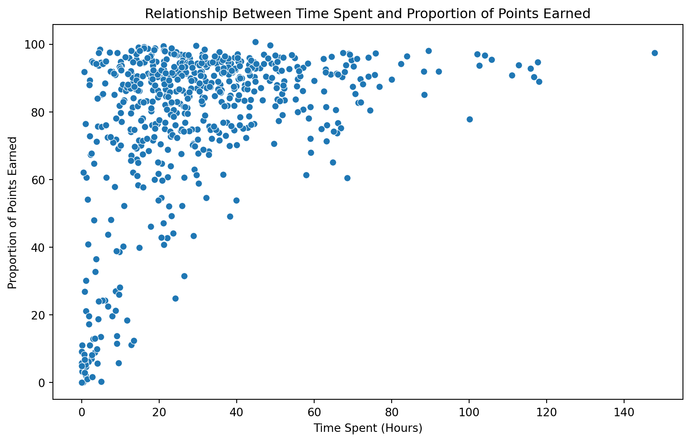
<Figure size 672x480 with 0 Axes>What didn;t we do????? Right, check for missing data - solets do that and rerun your script.
# Check the number of missing values before imputation
missing_values_before = data_to_explore['enrollment_reason'].isna().sum()
print(f'Missing values before imputation: {missing_values_before}')Missing values before imputation: 227Handle Midsing data
# Impute missing values with the string "Not Provided"
data_to_explore['enrollment_reason'].fillna('Not Provided', inplace=True)
# Check the number of missing values after imputation
missing_values_after = data_to_explore['enrollment_reason'].isna().sum()
print(f'Missing values after imputation: {missing_values_after}')Missing values after imputation: 0👉 Your Turn ⤵
# Create a pivot table for the heatmap
pivot_data = data_to_explore.pivot_table(index='enrollment_reason', columns='subject', aggfunc='size', fill_value=0)
# Create the heatmap
plt.figure(figsize=(12, 8))
sns.heatmap(pivot_data, cmap="YlOrRd", annot=True)
plt.title("Reasons for Enrollment by Subject") # Add the title
plt.xlabel("Subject") # Label for the x-axis
plt.ylabel("Enrollment Reason") # Label for the y-axis
plt.figtext(0.5, -0.1, "Which subjects were the least available at local schools?", ha="center", fontsize=10) # Add the caption
plt.show()
plt.clf() #add to clear the plot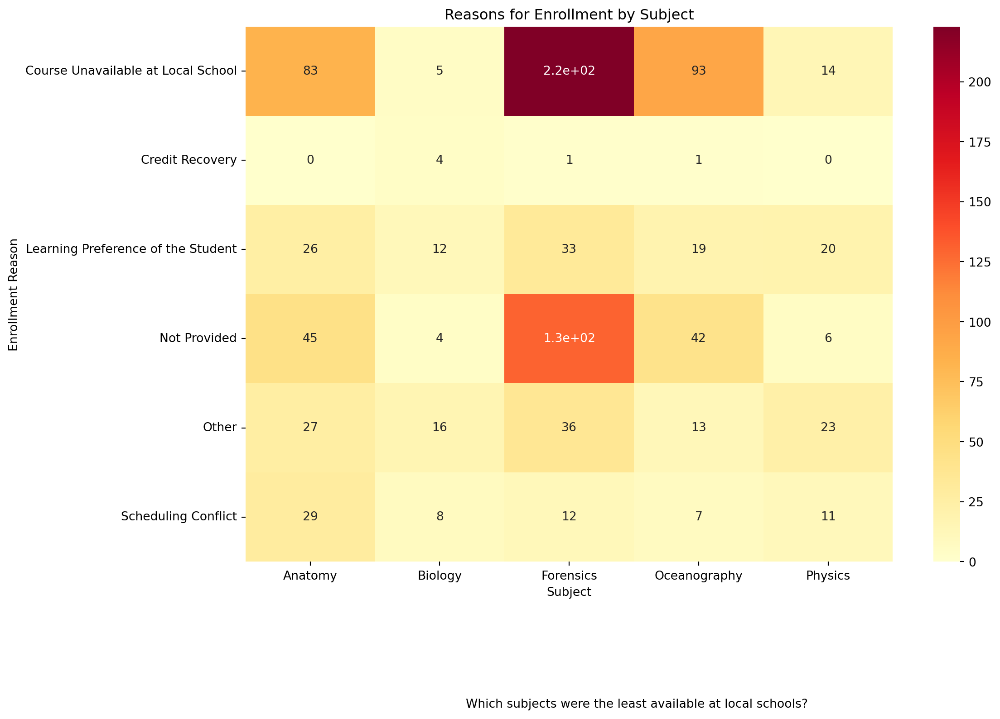
<Figure size 672x480 with 0 Axes>What do you notice here?
Two Continuous Variables
Create a basic visualization that examines the relationship between two continuous variables.
Scatter plot
We will be guided by the following research question.
❓ Can we predict the grade in a course from the time spent in the course LMS?
# Look at the data frame
data_to_explore.head()| student_id | course_id | gender | enrollment_reason | enrollment_status | time_spent | time_spent_hours | total_points_possible | total_points_earned | proportion_earned | ... | q8 | q9 | q10 | date.x | post_int | post_uv | post_tv | post_percomp | date.y | date | |
|---|---|---|---|---|---|---|---|---|---|---|---|---|---|---|---|---|---|---|---|---|---|
| 0 | 60186 | AnPhA-S116-01 | M | Course Unavailable at Local School | Approved/Enrolled | 2087.0501 | 34.784168 | 1775.0 | 1674.73000 | 94.35 | ... | 4.0 | 4.0 | 4.0 | 2015-09-17T16:41:00Z | NaN | NaN | NaN | NaN | NaN | NaN |
| 1 | 66693 | AnPhA-S116-01 | M | Course Unavailable at Local School | Approved/Enrolled | 2309.0334 | 38.483890 | 1775.0 | 1674.25000 | 94.32 | ... | 5.0 | 5.0 | 5.0 | 2015-09-10T17:43:00Z | NaN | NaN | NaN | NaN | NaN | NaN |
| 2 | 66811 | AnPhA-S116-01 | F | Course Unavailable at Local School | Approved/Enrolled | 5298.8507 | 88.314178 | 1775.0 | 1633.15000 | 92.01 | ... | 4.0 | 4.0 | 4.0 | 2015-09-10T18:16:00Z | NaN | NaN | NaN | NaN | NaN | NaN |
| 3 | 66862 | AnPhA-S116-01 | F | Course Unavailable at Local School | Approved/Enrolled | 1746.9667 | 29.116112 | 1775.0 | 1118.57333 | 63.02 | ... | NaN | NaN | NaN | NaN | NaN | NaN | NaN | NaN | NaN | NaN |
| 4 | 67508 | AnPhA-S116-01 | F | Scheduling Conflict | Approved/Enrolled | 2668.1830 | 44.469717 | 1775.0 | 1528.34333 | 86.10 | ... | NaN | NaN | NaN | NaN | NaN | NaN | NaN | NaN | NaN | NaN |
5 rows × 35 columns
❓ Which variables should we be looking at?
👉 Answer here ⤵
time_spent_hoursproportion_earned
Level a. The most basic level for a scatter plot
Includes:
data: data_to_explore.csv
aes()function - two continuous variablestime spent in hours mapped to x position
proportion earned mapped to y position
Plot type: sns.scatterplot()
👉 Your Turn ⤵
# Create a scatter plot
plt.figure(figsize=(10, 6))
sns.scatterplot(data=data_to_explore, x='time_spent_hours', y='proportion_earned')
plt.title("Relationship Between Time Spent and Proportion of Points Earned") # Add the title
plt.xlabel("Time Spent (Hours)") # Label for the x-axis
plt.ylabel("Proportion of Points Earned") # Label for the y-axis
plt.show()
plt.clf() #add to clear the plot
<Figure size 672x480 with 0 Axes>Level b. Add another layer with labels
Add a title: “How Time Spent on Course LMS is Related to Points Earned in the Course”
Add a x label: “Time Spent (Hours)”
Add a y label: “Proportion of Points Earned”
👉 Your Turn ⤵
# Create a scatter plot with labels
#YOUR CODE HERE:
plt.figure(figsize=(10, 6))
sns.scatterplot(data=data_to_explore, x='time_spent_hours', y='proportion_earned')
plt.title("How Time Spent on Course LMS is Related to Points Earned in the Course") # Add the title
plt.xlabel("Time Spent (Hours)") # Label for the x-axis
plt.ylabel("Proportion of Points Earned") # Label for the y-axis
plt.show()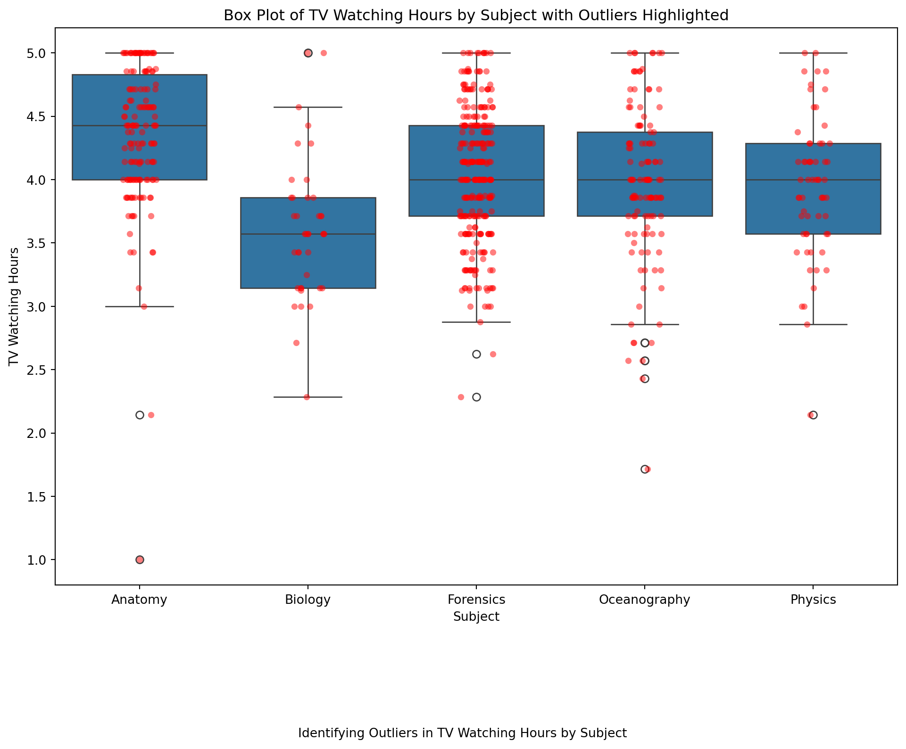
Level c. Add Scale with a different color.
❓ Can we notice anything about enrollment status?
- Add scale in
sns.scatterplot(): hue=‘enrollment_status’
👉 Your Turn ⤵
# Create a scatter plot with color based on enrollment_status
#YOUR CODE HERE:
plt.figure(figsize=(10, 6))
sns.scatterplot(data=data_to_explore, x='time_spent_hours', y='proportion_earned', hue='enrollment_status')
plt.title("How Time Spent on Course LMS is Related to Points Earned in the Course by Enrollment Status") # Add the title
plt.xlabel("Time Spent (Hours)") # Label for the x-axis
plt.ylabel("Proportion of Points Earned") # Label for the y-axis
plt.show()
Level d. Divide up graphs using facet to visualize by subject.
- Add facet with
sns.FacetGrid(): by subject
👉 Your Turn ⤵
# Create a scatter plot with facets for each subject
#YOUR CODE HERE:
g = sns.FacetGrid(data_to_explore, col='subject', col_wrap=3, height=4)
g.map(sns.scatterplot, 'time_spent_hours', 'proportion_earned', 'enrollment_status')
g.add_legend()
g.set_titles("{col_name} Subject")
g.set_axis_labels("Time Spent (Hours)", "Proportion of Points Earned")
plt.figtext(0.5, -0.1, "How Time Spent on Course LMS is Related to Points Earned in the Course by Subject", ha="center", fontsize=10) # Add the caption
plt.show()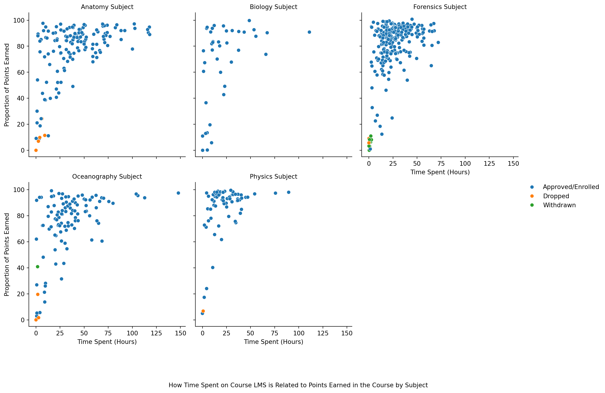
Level e. How can we remove NA’s from plot? and What will the code look like without the comments?
Use dropna() to remove NA’s
Add labels to the plt.title() function like above.
Use FacetGrid by subject
# Drop rows with missing values and create the scatter plot
cleaned_data = data_to_explore.dropna(subset=['time_spent_hours', 'proportion_earned', 'enrollment_status', 'subject'])
g = sns.FacetGrid(cleaned_data, col='subject', col_wrap=3, height=4)
g.map(sns.scatterplot, 'time_spent_hours', 'proportion_earned', 'enrollment_status')
g.add_legend(title="Enrollment Status", bbox_to_anchor=(1, 0.3), loc='right', borderaxespad=0)
g.set_titles("{col_name} Subject")
g.set_axis_labels("Time Spent (Hours)", "Proportion of Points Earned")
plt.figtext(0.5, -0.1, "How Time Spent on Course LMS is Related to Points Earned in the Course by Subject", ha="center", fontsize=10) # Add the caption
plt.show()
 As Alex explores the data through visualizations and summary statistics, she begins to see trends that could indicate which students are at risk. Her observations guide her to consider changes in her teaching approach or additional support for certain students.
As Alex explores the data through visualizations and summary statistics, she begins to see trends that could indicate which students are at risk. Her observations guide her to consider changes in her teaching approach or additional support for certain students.
Identifying Outliers
In exploratory data analysis, identifying outliers is crucial as they can significantly impact the results of your analysis and the performance of your models. Outliers are data points that differ significantly from other observations. There are several ways to identify outliers, and visualizations are an excellent tool for this.
We will be guided by the following research question.
❓ Which students’ TV watching hours are outliers?
Box Plot
A box plot (or box-and-whisker plot) is a standardized way of displaying the distribution of data based on a five-number summary: minimum, first quartile (Q1), median, third quartile (Q3), and maximum. Outliers can often be identified as points that are located outside the whiskers of the box plot.
data: data_to_explore
x parameter: ‘subject’
y parameter: ‘tv’
Plot type: sns.boxplot()
Add a title: “Box Plot of TV Watching Hours by Subject”
Add a caption: “Identifying Outliers in TV Watching Hours by Subject”
# Create a box plot for TV watching hours by subject
plt.figure(figsize=(12, 8))
sns.boxplot(data=data_to_explore, x='subject', y='tv')
plt.title("Box Plot of TV Watching Hours by Subject") # Add the title
plt.xlabel("Subject") # Label for the x-axis
plt.ylabel("TV Watching Hours") # Label for the y-axis
plt.figtext(0.5, -0.1, "Identifying Outliers in TV Watching Hours by Subject", ha="center", fontsize=10) # Add the caption
plt.show()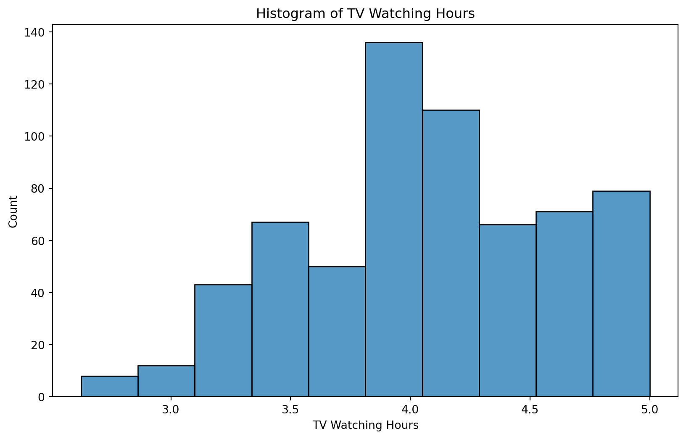
Analyzing the Box Plot
Look at the box plot and answer the following questions:
Which subjects have the most outliers in TV watching hours?
Are there any subjects where the median TV watching hours are significantly different from others?
Which subjects have the widest range of TV watching hours?
👉 Your Turn ⤵
Answer the questions based on your observations from the box plot.
Highlighting Outliers
To make it even clearer, you can add a scatter plot on top of the box plot to highlight the outliers. This can be done by overlaying the individual data points.
👉 Your Turn ⤵
# Create a box plot with scatter plot overlay for outliers
#YOUR CODE HERE:
plt.figure(figsize=(12, 8))
sns.boxplot(data=data_to_explore, x='subject', y='tv')
sns.stripplot(data=data_to_explore, x='subject', y='tv', color='red', jitter=True, alpha=0.5)
plt.title("Box Plot of TV Watching Hours by Subject with Outliers Highlighted") # Add the title
plt.xlabel("Subject") # Label for the x-axis
plt.ylabel("TV Watching Hours") # Label for the y-axis
plt.figtext(0.5, -0.1, "Identifying Outliers in TV Watching Hours by Subject", ha="center", fontsize=10) # Add the caption
plt.show()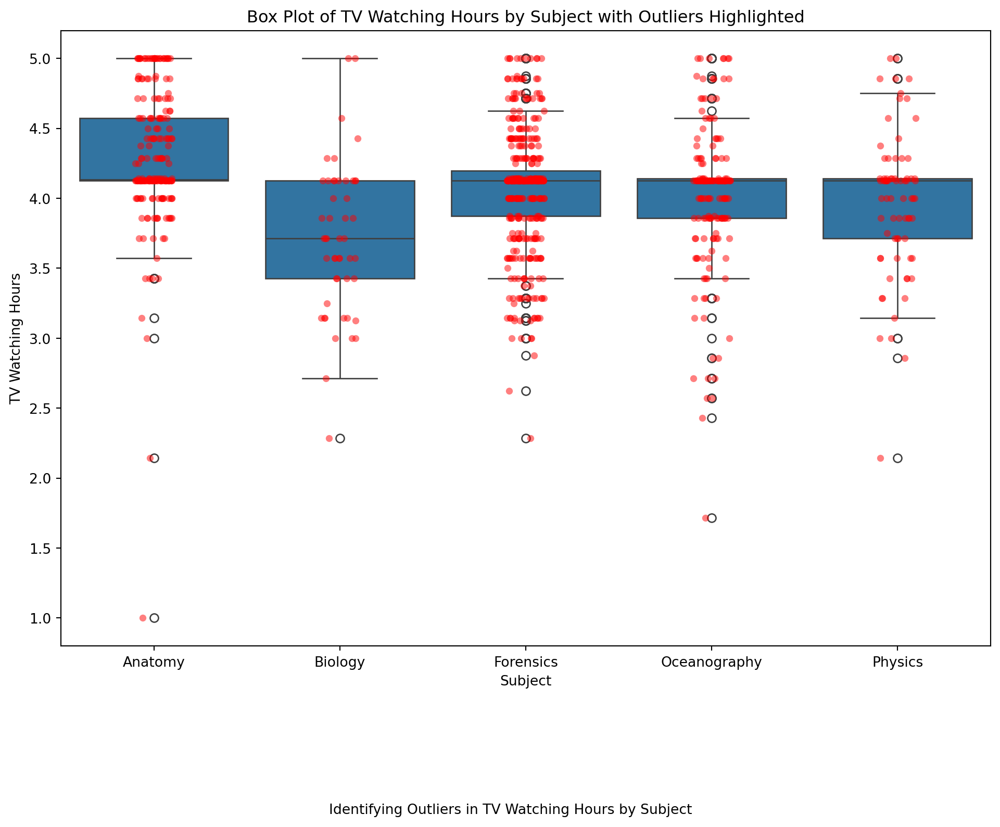
By overlaying a scatter plot on the box plot, you can clearly see which points are considered outliers. This method provides a comprehensive view of the data distribution and highlights any anomalies.
Step 1: Identify Outliers Using the IQR Method
We’ll start by identifying the outliers using the IQR method.
Calculate the Interquartile Range (IQR):
Q1 (25th percentile)
Q3 (75th percentile)
IQR = Q3 - Q1
Define the outlier thresholds:
Lower bound: Q1 - 1.5 * IQR
Upper bound: Q3 + 1.5 * IQR
Filter out the outliers.
# Calculate Q1 (25th percentile) and Q3 (75th percentile) for 'tv' column
Q1 = data_to_explore['tv'].quantile(0.25)
Q3 = data_to_explore['tv'].quantile(0.75)
IQR = Q3 - Q1 # Interquartile Range
# Define outlier thresholds
lower_bound = Q1 - 1.5 * IQR
upper_bound = Q3 + 1.5 * IQR
# Filter out the outliers
filtered_data = data_to_explore[(data_to_explore['tv'] >= lower_bound) & (data_to_explore['tv'] <= upper_bound)]
filtered_data.shape, filtered_data.head()((844, 35),
student_id course_id gender enrollment_reason \
0 60186 AnPhA-S116-01 M Course Unavailable at Local School
2 66811 AnPhA-S116-01 F Course Unavailable at Local School
3 66862 AnPhA-S116-01 F Course Unavailable at Local School
4 67508 AnPhA-S116-01 F Scheduling Conflict
5 70532 AnPhA-S116-01 F Learning Preference of the Student
enrollment_status time_spent time_spent_hours total_points_possible \
0 Approved/Enrolled 2087.0501 34.784168 1775.0
2 Approved/Enrolled 5298.8507 88.314178 1775.0
3 Approved/Enrolled 1746.9667 29.116112 1775.0
4 Approved/Enrolled 2668.1830 44.469717 1775.0
5 Approved/Enrolled 2938.4666 48.974443 1775.0
total_points_earned proportion_earned ... q8 q9 q10 \
0 1674.73000 94.35 ... 4.0 4.0 4.0
2 1633.15000 92.01 ... 4.0 4.0 4.0
3 1118.57333 63.02 ... NaN NaN NaN
4 1528.34333 86.10 ... NaN NaN NaN
5 1673.62000 94.29 ... 4.0 4.0 4.0
date.x post_int post_uv post_tv post_percomp date.y \
0 2015-09-17T16:41:00Z NaN NaN NaN NaN NaN
2 2015-09-10T18:16:00Z NaN NaN NaN NaN NaN
3 NaN NaN NaN NaN NaN NaN
4 NaN NaN NaN NaN NaN NaN
5 2015-09-11T17:18:00Z NaN NaN NaN NaN NaN
date
0 NaN
2 NaN
3 NaN
4 NaN
5 NaN
[5 rows x 35 columns])Step 2: Visualize the Data with and without Outliers
Let’s create a box plot to visualize the outliers and then plot the filtered data.
Box Plot with Outliers:
# Box plot to visualize outliers
plt.figure(figsize=(10, 6))
sns.boxplot(data=data_to_explore, x='tv')
plt.title('Box Plot of TV Watching Hours with Outliers')
plt.xlabel('TV Watching Hours')
plt.show()
Box Plot without Outliers:
# Box plot to visualize the data without outliers
plt.figure(figsize=(10, 6))
sns.boxplot(data=filtered_data, x='tv')
plt.title('Box Plot of TV Watching Hours without Outliers')
plt.xlabel('TV Watching Hours')
plt.show()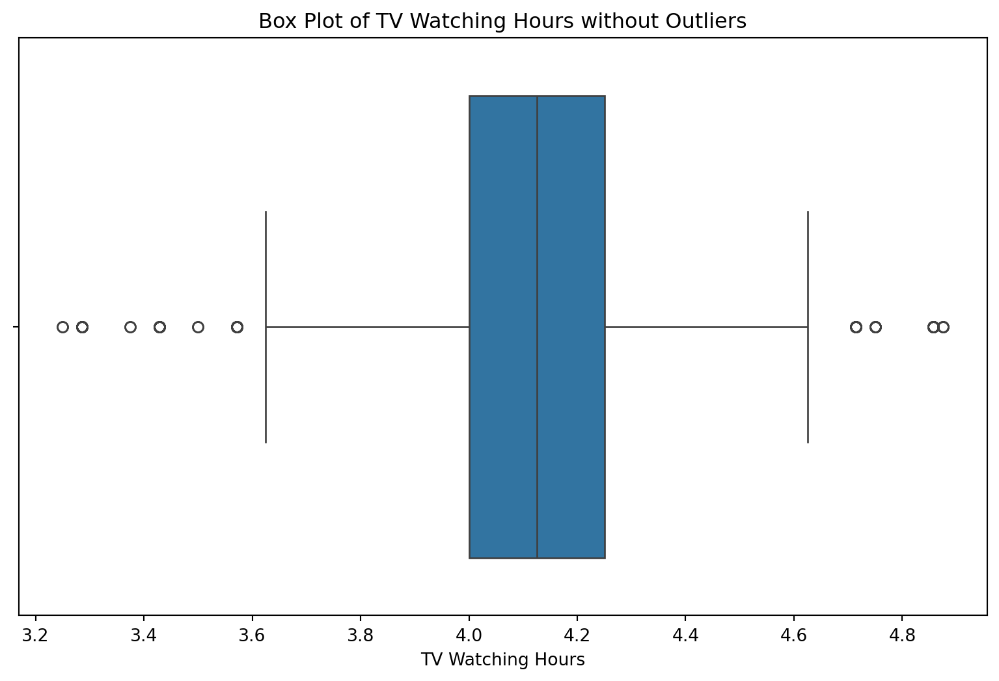
Step 3: Exploratory Analysis Questions
Here are some exploratory analysis questions we can ask:
- What is the distribution of TV watching hours among students?:
plt.figure(figsize=(10, 6))
sns.histplot(data=filtered_data, x='tv', bins=10)
plt.title('Histogram of TV Watching Hours')
plt.xlabel('TV Watching Hours')
plt.ylabel('Count')
plt.show()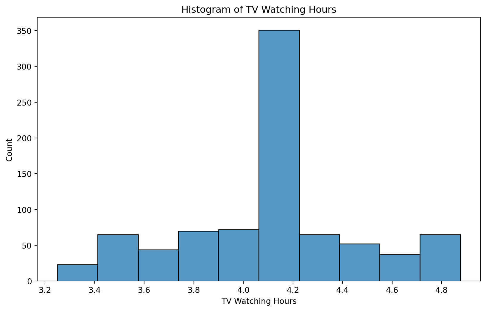
How do outliers affect the overall analysis?:
- Compare: Summary statistics (mean, median) with and without outliers.
# Summary statistics with outliers
print("Summary statistics with outliers:")
print(data_to_explore['tv'].describe())
# Summary statistics without outliers
print("\nSummary statistics without outliers:")
print(filtered_data['tv'].describe())Summary statistics with outliers:
count 943.000000
mean 4.083851
std 0.487504
min 1.000000
25% 3.857143
50% 4.125000
75% 4.285714
max 5.000000
Name: tv, dtype: float64
Summary statistics without outliers:
count 844.000000
mean 4.105366
std 0.342019
min 3.250000
25% 4.000000
50% 4.125000
75% 4.250000
max 4.875000
Name: tv, dtype: float64Are there any patterns in TV watching hours among different subjects?:
- Plot: Box plot of TV watching hours by subject.
plt.figure(figsize=(12, 8))
sns.boxplot(data=filtered_data, x='subject', y='tv')
plt.title('Box Plot of TV Watching Hours by Subject')
plt.xlabel('Subject')
plt.ylabel('TV Watching Hours')
plt.show()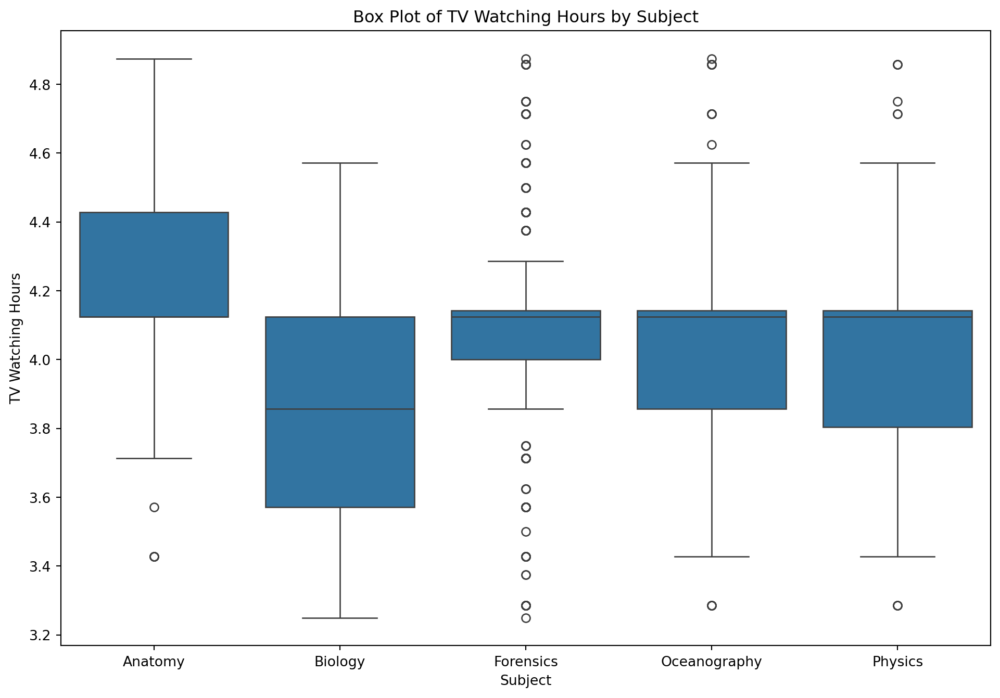
As Alex explores the data through visualizations and summary statistics, she begins to see trends that could indicate which students are at risk. Her observations guide her to consider changes in her teaching approach or additional support for certain students.
🛑 Stop here. Congratulations you finished the second part of the case study.
4. Model (Module 3)
Quantify the insights using mathematical models. As highlighted in.Chapter 3 of Data Science in Education Using R, the.Model step of the data science process entails “using statistical models, from simple to complex, to understand trends and patterns in the data.”
The authors note that while descriptive statistics and data visualization during theExplorestep can help us to identify patterns and relationships in our data, statistical models can be used to help us determine if relationships, patterns and trends are actually meaningful.
Install necessary packages in terminal
Remember to install the packages before calling the necessary libraries
Note
everything after the $ in the Terminal (MAC/LINUX)
$ python3 -m pip install statsmodels
$ python3 -m pip install scipy
Note
everything after the $ in the Terminal (Windows)
$ py -m pip install statsmodels
$ py -m pip install scipy
Load necessary libraries
#Load libraries
import statsmodels.api as sm #functions and classes for statistical models and tests.
import scipy.stats as stats #for probability distributions as well as statistical functions.A. Correlation Matrix
As highlighted in @macfadyen2010, scatter plots are a useful initial approach for identifying potential correlational trends between variables under investigation, but to further interrogate the significance of selected variables as indicators of student achievement, a simple correlation analysis of each variable with student final grade can be conducted.
There are two efficient ways to create correlation matrices, one that is best for internal use, and one that is best for inclusion in a manuscript. The {corrr} package provides a way to create a correlation matrix in a {tidyverse}-friendly way. Like for the {skimr} package, it can take as little as a line of code to create a correlation matrix. If not familiar, a correlation matrix is a table that presents how all of the variables are related to all of the other variables.
To understand the relationship between different variables, such as time_spent_hours and proportion_earned, we can use a correlation matrix. In Python, this is straightforward with the use of Pandas and Seaborn for visualization.
Simple Correlation:
You need to:
Select the variables of interest from
data_to_explore.proportion _earnedtime_spent_hours
👉 Your Turn ⤵
#YOUR CODE HERE:
# Selecting specific variables
#add the specific variables in the brackets
selected_data = data_to_explore[['proportion_earned', 'time_spent_hours']]A correlation matrix is a handy way to calculate the pairwise correlation coefficients between two or more (numeric) variables. The Pandas data frame has this functionality built-in to its corr() method.
# Calculating the correlation matrix
correlation_matrix = selected_data.corr()
# Printing the correlation matrix
print(correlation_matrix) proportion_earned time_spent_hours
proportion_earned 1.000000 0.438344
time_spent_hours 0.438344 1.000000👉 Your Turn ⤵
Visualize with sns.heatmap() for the new object correlation_matrix
#YOUR CODE HERE:
# Visualizing the correlation matrix
#(add code below)
sns.heatmap(correlation_matrix, annot=True, cmap='coolwarm')
plt.show()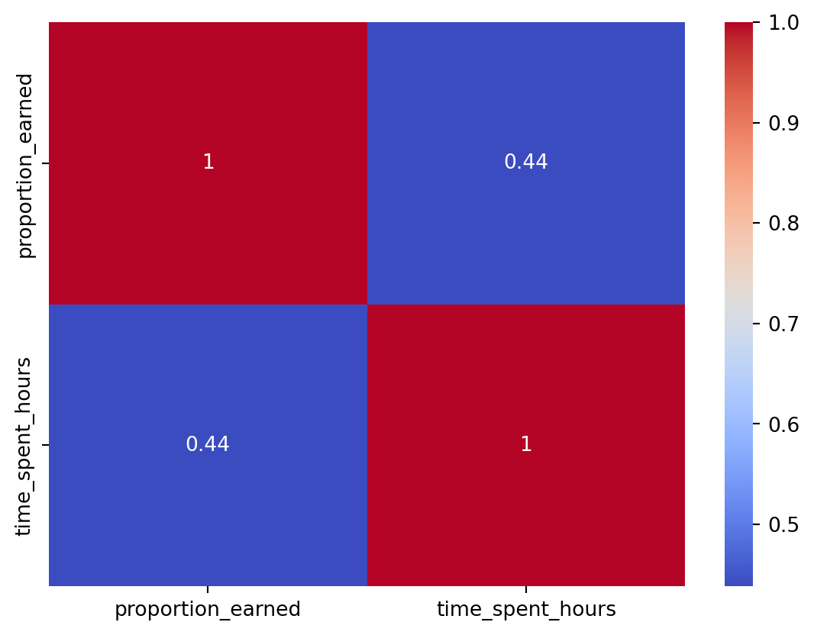
APA Write-Up: “In our study, we calculated Pearson’s correlation coefficient to assess the relationship between the proportion of course materials earned and the hours spent on course materials. The analysis revealed a moderate positive correlation of X (replace X with actual correlation value), suggesting that as students spend more time on course materials, their proportion of earned credits increases.”
B. Predict Academic Achievement
Linear Regression
In brief, a linear regression model involves estimating the relationships between one or more independent variables with one dependent variable. Mathematically, it can be written like the following.
\[ \operatorname{dependentvar} = \beta_{0} + \beta_{1}(\operatorname{independentvar}) + \epsilon \]
where Y is the value of the response variable and Xi is the value of the explanatory variable(s).
Creating a linear regression model in Statsmodels thus requires the following steps:
Import the Statsmodels library
Define Y and X matrices. This is optional, but it keeps the
OLS()call easier to readAdd a constant column to the X matrix
Call
OLS()to define the modelCall
fit()to actually estimate the model parameters using the data set (fit the line)Display the results
We will try and answer:
First, lets drop any missing values. You could also do the median but for simplicity here we are dropping.
# Step 1: Drop rows with missing values
data_cleaned = data_to_explore[['time_spent_hours', 'proportion_earned']].dropna()
# Step 2: Verify that there are no missing values
print(data_cleaned.isna().sum())time_spent_hours 0
proportion_earned 0
dtype: int64❓Does time spent predict grade earned?
- These are the next three steps.
# Step 3: Add independent and dependent variables to X and y
X = data_cleaned[['time_spent_hours']] # independent variable
y = data_cleaned['proportion_earned'] # dependent variable
# Step 4: Adding a constant to the model (for the intercept)
X = sm.add_constant(X)Now complete Steps 4 and 5 to Fit the model
# Step 5:Fit the model
model = sm.OLS(y, X).fit()Step 6
Your turn
- Use the
print()function addmodel.summary()
#YOUR CODE HERE:
# run the model
print(model.summary()) OLS Regression Results
==============================================================================
Dep. Variable: proportion_earned R-squared: 0.192
Model: OLS Adj. R-squared: 0.191
Method: Least Squares F-statistic: 141.8
Date: Fri, 19 Jul 2024 Prob (F-statistic): 1.80e-29
Time: 20:10:37 Log-Likelihood: -2701.6
No. Observations: 598 AIC: 5407.
Df Residuals: 596 BIC: 5416.
Df Model: 1
Covariance Type: nonrobust
====================================================================================
coef std err t P>|t| [0.025 0.975]
------------------------------------------------------------------------------------
const 62.4306 1.511 41.325 0.000 59.464 65.398
time_spent_hours 0.4792 0.040 11.906 0.000 0.400 0.558
==============================================================================
Omnibus: 109.391 Durbin-Watson: 1.851
Prob(Omnibus): 0.000 Jarque-Bera (JB): 169.357
Skew: -1.213 Prob(JB): 1.68e-37
Kurtosis: 3.955 Cond. No. 62.5
==============================================================================
Notes:
[1] Standard Errors assume that the covariance matrix of the errors is correctly specified.This Python script configures and fits a linear regression model using statsmodels. The model predicts proportion_earned, the percentage of points that students earned, using time_spent_hours as the predictor. The intercept is estimated at 62.4306, suggesting that in the absence of any time spent, the expected score is significantly above zero, likely reflecting base knowledge or minimal requirements met by all students.
The model’s R-squared value is 0.192, indicating that about 19.2% of the variance in proportion_earned is explained by the time students spent studying. The coefficient for time_spent_hours is 0.4792, indicating that each additional hour spent studying is associated with an increase of about 0.4792 points in the proportion of points earned, a significant predictor of performance (p < 0.001).
👉 Your Turn ⤵
Handle Missing data
First, we need to add the variables to the data_cleaned object
data_cleaned = data_to_explore[['time_spent_hours', 'proportion_earned', 'int']]
# Step 2: Drop rows with missing values in any of the selected columns
data_cleaned = data_cleaned.dropna()
# Step 3: Verify that there are no missing values in data_cleaned
print(data_cleaned.isna().sum())time_spent_hours 0
proportion_earned 0
int 0
dtype: int64Build Model - Add + int, after time_spent_hours for students and self-reported interest or int in science to the independent and dependent variables. Remember to use the data-cleaned dataFrame
#YOUR CODE HERE:
# Steps 1 -3, add independent and dependent variables to X and y
X = data_cleaned[['time_spent_hours', 'int']] # independent variables
y = data_cleaned['proportion_earned'] # dependent variable
# Adding a constant to the model (for the intercept)
X = sm.add_constant(X)
#Steps 4 and 5 to Fit the model
model = sm.OLS(y, X, missing='drop').fit()
# Output the summary of the model
print(model.summary()) OLS Regression Results
==============================================================================
Dep. Variable: proportion_earned R-squared: 0.186
Model: OLS Adj. R-squared: 0.183
Method: Least Squares F-statistic: 61.18
Date: Fri, 19 Jul 2024 Prob (F-statistic): 1.16e-24
Time: 20:10:37 Log-Likelihood: -2415.1
No. Observations: 539 AIC: 4836.
Df Residuals: 536 BIC: 4849.
Df Model: 2
Covariance Type: nonrobust
====================================================================================
coef std err t P>|t| [0.025 0.975]
------------------------------------------------------------------------------------
const 44.9660 6.649 6.763 0.000 31.905 58.027
time_spent_hours 0.4255 0.041 10.378 0.000 0.345 0.506
int 4.6282 1.536 3.012 0.003 1.610 7.646
==============================================================================
Omnibus: 107.272 Durbin-Watson: 1.854
Prob(Omnibus): 0.000 Jarque-Bera (JB): 173.917
Skew: -1.250 Prob(JB): 1.72e-38
Kurtosis: 4.220 Cond. No. 279.
==============================================================================
Notes:
[1] Standard Errors assume that the covariance matrix of the errors is correctly specified.👉 Your Turn ⤵
APA write up: *“A linear regression analysis was conducted to assess the effects of time spent in hours (time_spent_hours) and students’ attitude interest (int) on their proportion of points earned (proportion_earned). The model accounted for a moderate proportion of the variance in proportion_earned, R² = .186, adjusted R² = .183. The overall model was statistically significant, F(2, 536) = 61.18, p < .001.
The regression coefficients indicated that each additional hour spent is associated with a significant increase of 0.43 points in the proportion of points earned (B = 0.4255, SE = 0.041, p < .001). Furthermore, attitude interest was significantly positive, showing that higher interest levels were associated with an increase of about 4.63 points in the proportion of points earned (B = 4.6282, SE = 1.536, p = .003).
In summary, both time spent and attitude interest significantly predicted the proportion of points earned by the students, with both predictors contributing positively to students’ performance”*
D. Assumptions
Great! Now that you have defined your model in Python, which predicts proportion_earned based on time_spent_hours and the interest variable int, let’s go through how to check the assumptions of this linear model using the various diagnostic plots and tests.
- Linearity
# Plot the residuals vs. fitted values
fitted_vals = model.fittedvalues
residuals = model.resid
plt.figure(figsize=(10, 6))
sns.residplot(x=fitted_vals, y=residuals, lowess=True, line_kws={'color': 'red', 'lw': 1})
plt.title('Residuals vs Fitted')
plt.xlabel('Fitted values')
plt.ylabel('Residuals')
plt.show()
plt.clf() # Clear the plot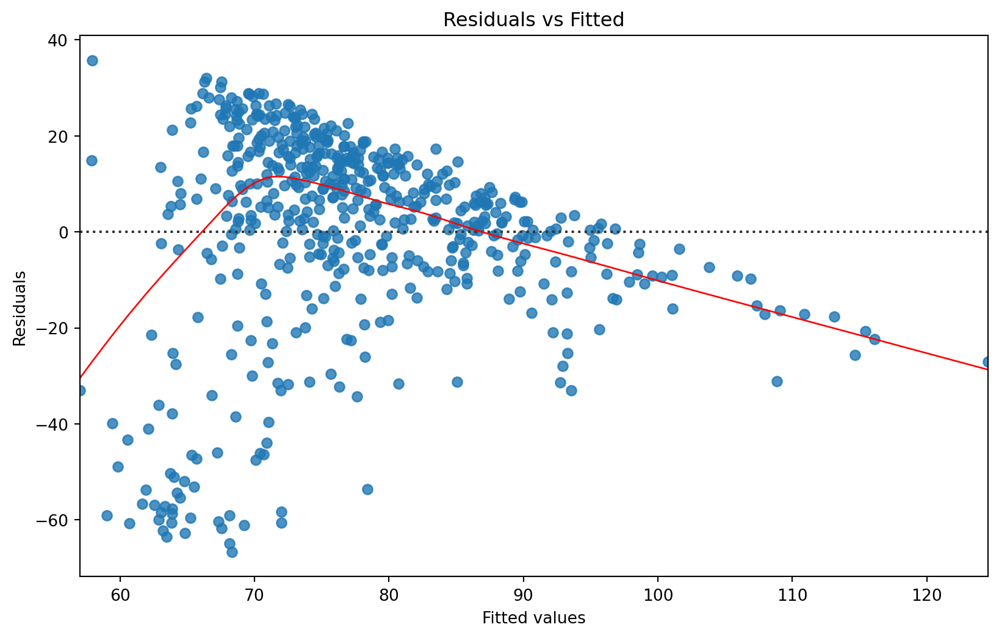
<Figure size 672x480 with 0 Axes>- Independence
# Durbin-Watson statistic
from statsmodels.stats.stattools import durbin_watson
dw_statistic = durbin_watson(residuals)
print(f'Durbin-Watson statistic: {dw_statistic}')Durbin-Watson statistic: 1.8542147128294413Interpretation of the Durbin-Watson Statistic
The Durbin-Watson statistic ranges from 0 to 4:
Around 2: Indicates no autocorrelation in the residuals.
Less than 2: Indicates positive autocorrelation.
Greater than 2: Indicates negative autocorrelation.
With a Durbin-Watson statistic of approximately 1.85, it is close to 2, suggesting that there is little to no autocorrelation in the residuals, which is a good indication for the independence assumption.
- Homoscedasticity:
The Scale-Location plot (residuals vs. fitted values) should show a horizontal line with equally spread residuals, indicating homoscedasticity.
👉 Your Turn ⤵
In the code chunk below:
Data: Use the
data_to_exploreDataFrame.Mapping: Use the
fitted_valsvariable mapped to the x position andnp.sqrt(np.abs(residuals))mapped to the y position.Plot Type: Use the
sns.scatterplot()function to create the scatter plot.Title: Add a title “Scale-Location Plot”.
X-axis Label: Label the x-axis as “Fitted values”.
Y-axis Label: Label the y-axis as “Sqrt(|Residuals|)
Clear plot: Clear the plot if needed
plt.clf()
#YOUR CODE HERE:
plt.figure(figsize=(10, 6))
sns.scatterplot(x=fitted_vals, y=np.sqrt(np.abs(residuals)), edgecolor='w')
plt.title('Scale-Location Plot')
plt.xlabel('Fitted values')
plt.ylabel('Sqrt(|Residuals|)')
plt.show()
plt.clf() # Clear the plot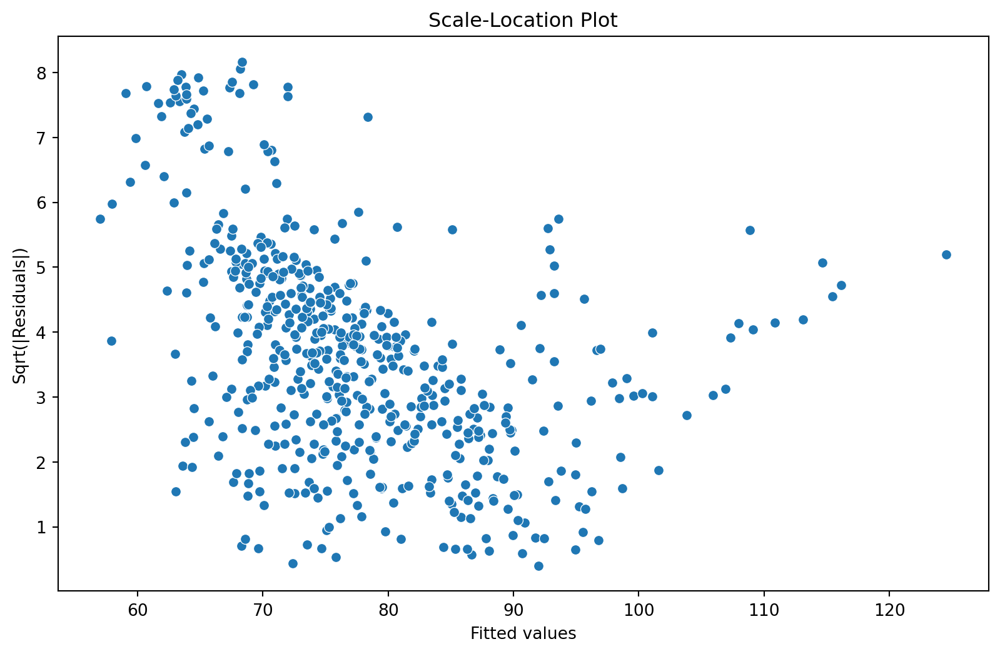
<Figure size 672x480 with 0 Axes>- Absence of Multicollinearity
The Variance Inflation Factor (VIF) is a measure used to detect the presence of multicollinearity among the predictor variables in a regression model. Multicollinearity occurs when two or more predictors are highly correlated, which can affect the stability and interpretability of the regression coefficients.
from statsmodels.stats.outliers_influence import variance_inflation_factor # Import VIF function
vif_data = pd.DataFrame()
vif_data['Variable'] = X.columns
vif_data['VIF'] = [variance_inflation_factor(X.values, i) for i in range(X.shape[1])]
print(vif_data) Variable VIF
0 const 51.909308
1 time_spent_hours 1.006076
2 int 1.006076General Rule of Thumb for VIF:
VIF < 5: Indicates low multicollinearity.
VIF between 5 and 10: Indicates moderate multicollinearity.
VIF > 10: Indicates high multicollinearity and may warrant further investigation or corrective measures.
👉 Your Turn ⤵
Add your interpretation below:
- “In summary, for the model, the VIF values for
time_spent_hoursandintare both close to 1, indicating that there is no significant multicollinearity between the predictor variables. Therefore, you can be confident that the regression coefficients for these variables are stable and interpretable. The high VIF for the constant term is not typically a concern in this context.”
🛑 Stop here. Congratulations you finished the third part of the case study.
5. Communicate (Module 4)
For your final Your Turn, your goal is to distill our analysis into a Quarto “data product” designed to illustrate key findings. Feel free to use the template in the lab 4 folder.
The final step in the workflow/process is sharing the results of your analysis with wider audience. Krumm et al. @krumm2018 have outlined the following 3-step process for communicating with education stakeholders findings from an analysis:
Select. Communicating what one has learned involves selecting among those analyses that are most important and most useful to an intended audience, as well as selecting a form for displaying that information, such as a graph or table in static or interactive form, i.e. a “data product.”
Polish. After creating initial versions of data products, research teams often spend time refining or polishing them, by adding or editing titles, labels, and notations and by working with colors and shapes to highlight key points.
Narrate. Writing a narrative to accompany the data products involves, at a minimum, pairing a data product with its related research question, describing how best to interpret the data product, and explaining the ways in which the data product helps answer the research question and might be used to inform new analyses or a “change idea” for improving student learning.
👉 Your Turn ⤵
Create a Data Story with our current data set, or your own. Make sure to use the LA workflow as your guide to include
- Develop a research question
- Add ggplot visualizations
- Modeling visualizations
- Communicate by writing up a short write up for the intended stakeholders. Remember to write it in terms the stakeholders understand.
Finally, Alex prepares to communicate her findings. She creates a simple web page using Markdown to share her insights with colleagues. This acts as a practical example of how data can inform teaching practices.